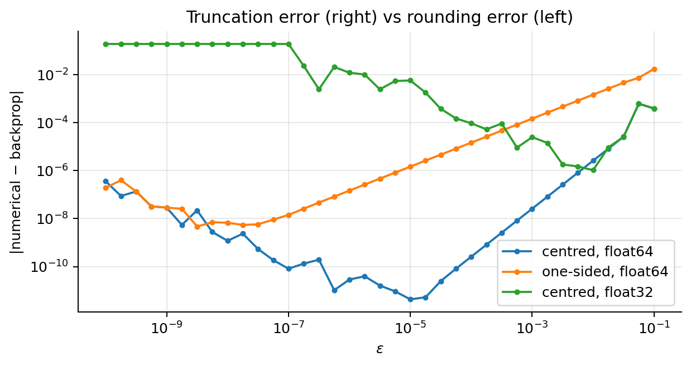
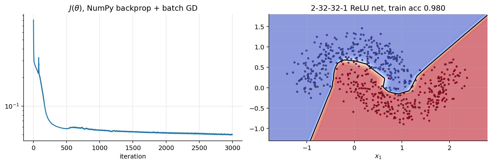
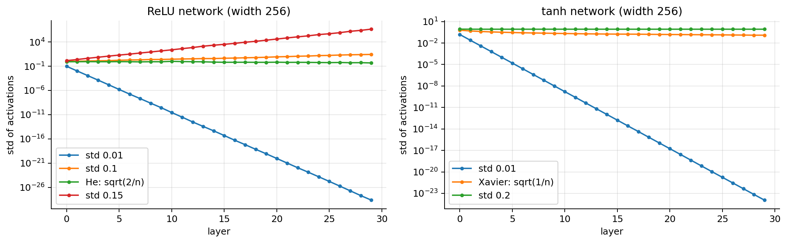
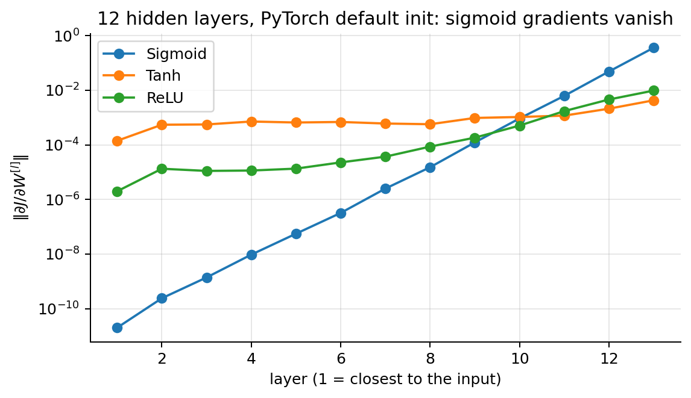
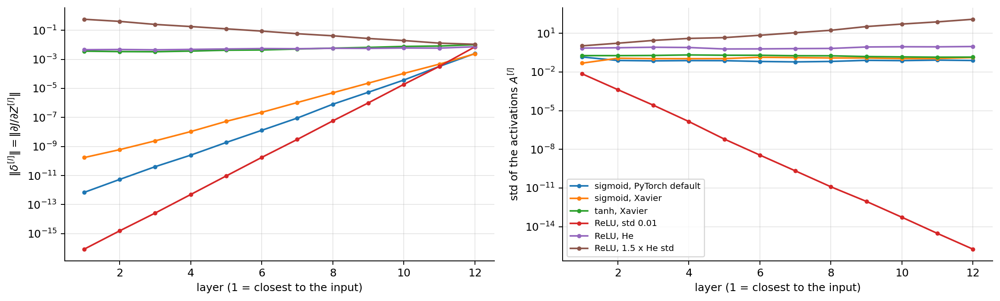

import numpy as np
import matplotlib.pyplot as plt
plt.rcParams.update({"figure.dpi": 90, "axes.grid": True, "grid.alpha": 0.3,
"axes.spines.top": False, "axes.spines.right": False})
rng = np.random.default_rng(0)01 · Backpropagation
To train a network with gradient descent we need \(\nabla_{\boldsymbol{\theta}}J\) for every weight and bias. Backpropagation computes all of them in one backward sweep, at roughly the cost of a forward pass. It is nothing more than the chain rule, organised so that no computation is repeated. This note builds it from a single derivative up to the general algorithm, with the numbers of the slides at every step, then covers what you need to use it safely: gradient checking, automatic differentiation in PyTorch (and its pitfalls), numerically stable losses, initialisation, vanishing and exploding gradients, and the assumptions behind a training run.
What you need. From NN note 00: the forward pass \(\mathbf{Z}^{[l]} = \mathbf{A}^{[l-1]}\mathbf{W}^{[l]} + \mathbf{b}^{[l]}\), \(\mathbf{A}^{[l]} = g^{[l]}(\mathbf{Z}^{[l]})\) (examples are the rows of \(\mathbf{A}^{[l]}\), \(\mathbf{A}^{[0]} = \mathbf{X}\)), the activations’ derivatives (\(\sigma' = \sigma(1-\sigma)\), \(\tanh' = 1-\tanh^2\), \(\mathrm{ReLU}' = \mathbb{1}[z>0]\)), and the fact that for the matching output + loss pairs the gradient at the logits is “prediction − target”. From calculus: derivatives and the chain rule. Gradient descent is ML note 01: \(\boldsymbol{\theta}\leftarrow\boldsymbol{\theta} - \alpha\nabla_{\boldsymbol{\theta}}J\).
After this note you can
- compute every gradient of a small network by hand, and explain why the backward pass costs about two forward passes while finite differences cost one per parameter;
- derive the three backpropagation formulas and implement them in NumPy;
- verify a backward pass with a proper gradient check, and recognise its false alarms (kinks, float32, randomness);
- use PyTorch’s autograd without its classic pitfalls, and write numerically stable losses;
- diagnose vanishing and exploding gradients layer by layer and choose the remedy (initialisation, ReLU, normalisation, residual connections, clipping).
1. Where we are
Training a network is a loop of five steps:
\[ \begin{gathered} \text{data } (\mathbf{x}, y)\ \longrightarrow\ \textbf{forward: } \hat y = h(\mathbf{x})\ \longrightarrow\ \textbf{loss } L(\hat y, y)\ \longrightarrow \\ \textbf{backward: } \frac{\partial L}{\partial\theta} \text{ for every } \theta\ \longrightarrow\ \textbf{update: } \theta\leftarrow\theta - \alpha\frac{\partial L}{\partial\theta} . \end{gathered} \]
NN note 00 gave us the forward pass and the loss. Gradient descent needs one more thing: the derivative of the loss with respect to every weight and bias. A small MLP has thousands of parameters; GPT-2 (small) has 124 million. We need a method that gets all the gradients cheaply and mechanically. Backpropagation is the chain rule, applied from the loss backwards, reusing what the forward pass already computed.
2. A derivative is a sensitivity
The derivative \(\frac{dy}{dx}\) says how much \(y\) changes when \(x\) is nudged a little: \(\Delta y\approx\frac{dy}{dx}\,\Delta x\). The chain rule: if \(y\) depends on \(u\) and \(u\) depends on \(x\), the sensitivities multiply,
\[ \frac{dy}{dx} = \frac{dy}{du}\cdot\frac{du}{dx} . \]
A partial derivative \(\frac{\partial L}{\partial w}\) is the same thing for one input while all the others are held fixed, and the gradient \(\nabla_{\boldsymbol{\theta}}L\) is the vector of all of them. A neural network is a long chain of simple functions, and backpropagation is the chain rule applied along the chain, from the loss back to each weight.
Worked example. \(u = 3x + 1\), \(y = u^2\), at \(x = 1\):
\[ \begin{aligned} u &= 3\cdot1 + 1 = 4, \qquad y = 4^2 = 16 \\ &\quad\small \text{forward: compute and keep every intermediate value}\\ \frac{du}{dx} &= 3, \qquad \frac{dy}{du} = 2u = 8 \\ &\quad\small \text{each box knows its own local derivative}\\ \frac{dy}{dx} &= \frac{dy}{du}\cdot\frac{du}{dx} = 8\cdot3 = 24 \\ &\quad\small \text{chain rule: multiply along the path} \end{aligned} \]
Check with a nudge: \(x = 1.01\) gives \(u = 4.03\) and \(y = 16.2409\), a change of \(0.2409\approx 24\times0.01 = 0.24\). The derivative predicts what a small nudge does; the leftover \(0.0009\) is the second-order term \(\frac12 y''(\Delta x)^2 = \frac12\cdot18\cdot0.0001\) (here \(y = (3x+1)^2\), so \(y'' = 18\)).
Try it. Step through: the local derivatives 3 and 8 appear under the boxes, their product 24 is the derivative, and the nudge of 0.01 checks it.
u_f = lambda x: 3 * x + 1
y_f = lambda x: u_f(x) ** 2
print(f"u = {u_f(1.0)}, y = {y_f(1.0)}, dy/dx = 2u * 3 = {2 * u_f(1.0) * 3}")
print(f"x = 1.01: y = {y_f(1.01):.4f}, change {y_f(1.01) - y_f(1.0):.4f} (derivative predicts 24 * 0.01 = 0.24)")u = 4.0, y = 16.0, dy/dx = 2u * 3 = 24.0
x = 1.01: y = 16.2409, change 0.2409 (derivative predicts 24 * 0.01 = 0.24)3. Gradient calculation: several paths
We could write the whole network as one very complex formula and differentiate it by hand, but that is complex and inefficient. Backpropagation instead works on the computational graph of the computation, the structure that TensorFlow and PyTorch build automatically. The one new ingredient is what happens when a parameter reaches the loss through several paths: the chain rule adds one term per path. If \(g_j = g_j(\theta_1,\dots,\theta_p)\) for \(j = 1,\dots,k\) and \(J = J(g_1,\dots,g_k)\),
\[ \frac{\partial J}{\partial\theta_i} = \sum_{j=1}^k\frac{\partial J}{\partial g_j}\,\frac{\partial g_j}{\partial\theta_i} . \]
Why. Nudge \(\theta_i\) by \(\Delta\theta_i\). To first order each \(g_j\) moves by \(\Delta g_j\approx\frac{\partial g_j}{\partial\theta_i}\Delta\theta_i\), and \(J\) responds to all those moves at once, \(\Delta J\approx\sum_j\frac{\partial J}{\partial g_j}\Delta g_j\) (first-order Taylor expansion of \(J\) in the \(g_j\)). Substituting and dividing by \(\Delta\theta_i\) gives the formula. The single-path rule is the case \(k = 1\): \(\frac{d f(g(x))}{dx} = \frac{df}{dg}\big|_{g(x)}\cdot\frac{dg}{dx}\), the outer derivative evaluated at the inner function times the inner derivative.
Worked example. \(J = g_1g_2\) with \(g_1 = \theta^2\) and \(g_2 = 3\theta\), at \(\theta = 2\) (so \(g_1 = 4\), \(g_2 = 6\)):
\[ \begin{aligned} \frac{dJ}{d\theta} &= \frac{\partial J}{\partial g_1}\frac{dg_1}{d\theta} + \frac{\partial J}{\partial g_2}\frac{dg_2}{d\theta} \\ &\quad\small \text{two paths}\\ &= g_2\cdot2\theta + g_1\cdot3 = 6\cdot4 + 4\cdot3 = 24 + 12 = 36 . \\ &\quad\small \text{local derivatives at } \theta = 2 \end{aligned} \]
Directly, \(J = 3\theta^3\) and \(dJ/d\theta = 9\theta^2 = 36\). ✓
4. A computation is a graph: \(f = (a+b)\cdot c\)
Every node does one simple operation. Forward: compute each node from its inputs, left to right. Backward: start with \(\partial f/\partial f = 1\) and walk right to left; at each node,
\[ \text{gradient of an input} = (\text{gradient of the output})\times(\text{local derivative}). \]
With \(a = 2\), \(b = 5\), \(c = -4\) and the intermediate node \(q = a + b\):
\[ \begin{aligned} q &= a + b = 2 + 5 = 7, \qquad f = q\cdot c = 7\cdot(-4) = -28 \\ &\quad\small \text{forward}\\ \frac{\partial f}{\partial f} &= 1 \\ &\quad\small \text{start of the backward pass}\\ \frac{\partial f}{\partial q} &= c = -4, \qquad \frac{\partial f}{\partial c} = q = 7 \\ &\quad\small \text{multiply node: } \tfrac{\partial(qc)}{\partial q} = c,\ \tfrac{\partial(qc)}{\partial c} = q\\ \frac{\partial f}{\partial a} &= \frac{\partial f}{\partial q}\cdot\frac{\partial q}{\partial a} = (-4)\cdot1 = -4, \qquad \frac{\partial f}{\partial b} = -4 \\ &\quad\small \text{add node: local derivative 1} \end{aligned} \]
Meaning of the result: increase \(a\) by a tiny \(\epsilon\) and \(f\) changes by \(-4\epsilon\). Check: \(a = 2.01\Rightarrow f = 7.01\cdot(-4) = -28.04\). ✓ Each node needs only its own local derivative and the number coming from the right; no node has to know the whole formula. That is why the method scales to millions of parameters and to any architecture.
Try it. Step through the forward values (\(q = 7\), \(f = -28\)), then the backward pass from \(\partial f/\partial f = 1\): the multiply node sends \(-4\) to \(q\) and \(7\) to \(c\), the add node copies \(-4\) to both \(a\) and \(b\).
a, b, c = 2.0, 5.0, -4.0
q = a + b; f = q * c # forward
df_dq, df_dc = c, q # multiply node
df_da, df_db = df_dq * 1, df_dq * 1 # add node
print(f"forward: q = {q}, f = {f}; backward: df/dq = {df_dq}, df/dc = {df_dc}, df/da = {df_da}, df/db = {df_db}")
print(f"check: a = 2.01 gives f = {(2.01 + b) * c:.2f}, a change of {(2.01 + b) * c - f:.2f} = -4 * 0.01")forward: q = 7.0, f = -28.0; backward: df/dq = -4.0, df/dc = 7.0, df/da = -4.0, df/db = -4.0
check: a = 2.01 gives f = -28.04, a change of -0.04 = -4 * 0.015. Three gates to remember
Every layer in this course is built from three kinds of node plus element-wise functions. With inputs 3 and 5 and an upstream gradient of 2 (the gradient arriving from the right):
| Gate | Forward | Local derivatives | Backward (upstream 2) | Rule |
|---|---|---|---|---|
| add \(u + v\) (biases, residual connections) | \(3 + 5 = 8\) | \(1, 1\) | \(2\cdot1 = 2\) and \(2\) | distributor: the upstream gradient is copied to both inputs |
| multiply \(uv\) (weight × input) | \(3\cdot5 = 15\) | \(v, u\) | \(2\cdot5 = 10\) and \(2\cdot3 = 6\) | swapper: each input gets upstream × the other input |
| max \(\max(u, v)\) (ReLU, max-pooling) | \(\max(3,5) = 5\) | \(\mathbb{1}[u>v], \mathbb{1}[v>u]\) | \(0\) and \(2\) | router: only the winner receives the gradient |
The multiply rule is why a weight’s gradient is proportional to the activation feeding it: for \(z = wa\), \(\partial L/\partial w = \delta\cdot a\) with \(\delta = \partial L/\partial z\). The dual of the add gate is the copy (a value used in several places, like \(\theta\) in section 3): on the way back the gradients arriving from its uses add up. Element-wise functions multiply by their derivative, written with the stored output: sigmoid \(a(1-a)\), tanh \(1-a^2\) (NN note 00, section 14).
6. One neuron, forward and backward, with numbers
One neuron, one example: \(z = wx + b\), \(a = \sigma(z)\), \(J = -[y\log a + (1-y)\log(1-a)]\), with \(x = 2\), \(w = -0.5\), \(b = 0.3\), \(y = 1\) (so \(J = -\log a\)).
| Step | Forward | Backward (chain rule) |
|---|---|---|
| \(z = wx + b\) | \(-0.5\cdot2 + 0.3 = -0.7\) | \(\frac{\partial J}{\partial w} = \frac{\partial J}{\partial z}\,x\), \(\;\frac{\partial J}{\partial b} = \frac{\partial J}{\partial z}\cdot1\) |
| \(a = \sigma(z)\) | \(\sigma(-0.7) = 0.332\) | \(\frac{\partial J}{\partial z} = \frac{\partial J}{\partial a}\,a(1-a)\) |
| \(J = -\log a\) | \(1.103\) | \(\frac{\partial J}{\partial a} = -\frac{1}{a} = -3.014\) |
Backward numbers: \(\sigma'(z) = a(1-a) = 0.332\cdot0.668 = 0.222\), so \(\frac{\partial J}{\partial z} = -3.014\cdot0.222 = -0.668 = a - y\) (the “prediction minus target” of NN note 00), \(\frac{\partial J}{\partial w} = -0.668\cdot2 = -1.336\), \(\frac{\partial J}{\partial b} = -0.668\). Both gradients are negative: increase \(w\) and \(b\).
One step of gradient descent with \(\alpha = 0.5\):
\[ \begin{aligned} w &\leftarrow -0.5 - 0.5\cdot(-1.336) = -0.5 + 0.668 = 0.168, \qquad b \leftarrow 0.3 - 0.5\cdot(-0.668) = 0.634\\ z &= 0.168\cdot2 + 0.634 = 0.970, \qquad a = \sigma(0.970) = 0.725, \qquad J = -\log0.725 = 0.321 . \end{aligned} \]
One step, and the neuron went from 33 % to 73 % on this positive example; the loss fell from 1.103 to 0.321. The blue numbers of the figure are computed left to right and stored; every red number reuses a blue one.
Try it. Step through the backward pass: \(\partial L/\partial a = -3.014\), \(\partial L/\partial z = -0.668\), \(\partial L/\partial w = -1.336\) and \(\partial L/\partial b = -0.668\), the update, and the new forward pass with loss 0.321.
x, w, b, y = 2.0, -0.5, 0.3, 1.0
sig = lambda z: 1 / (1 + np.exp(-z))
z = w * x + b; a = sig(z); J = -np.log(a)
dJ_da = -1 / a; dJ_dz = dJ_da * a * (1 - a); dJ_dw = dJ_dz * x; dJ_db = dJ_dz
print(f"forward : z={z:.3f} a={a:.3f} J={J:.3f}")
print(f"backward: dJ/da={dJ_da:.3f} a(1-a)={a * (1 - a):.3f} dJ/dz={dJ_dz:.3f} (a-y={a-y:.3f}) dJ/dw={dJ_dw:.3f} dJ/db={dJ_db:.3f}")
eps = 1e-6; Jf = lambda w_: -np.log(sig(w_ * x + b))
print(f"finite-difference dJ/dw = {(Jf(w + eps) - Jf(w - eps)) / (2 * eps):.3f}")
w_new, b_new = w - 0.5 * dJ_dw, b - 0.5 * dJ_db; z_new = w_new * x + b_new
print(f"after one step (alpha = 0.5): w={w_new:.3f} b={b_new:.3f} z={z_new:.3f} a={sig(z_new):.3f} J={-np.log(sig(z_new)):.3f}")forward : z=-0.700 a=0.332 J=1.103
backward: dJ/da=-3.014 a(1-a)=0.222 dJ/dz=-0.668 (a-y=-0.668) dJ/dw=-1.336 dJ/db=-0.668
finite-difference dJ/dw = -1.336
after one step (alpha = 0.5): w=0.168 b=0.634 z=0.970 a=0.725 J=0.3217. Why backpropagation is efficient
The naive way nudges each of the \(P\) parameters and re-runs the network. The centred finite difference
\[ \frac{\partial J}{\partial\theta_k}\approx\frac{J(\boldsymbol{\theta}+\varepsilon\mathbf{e}_k) - J(\boldsymbol{\theta}-\varepsilon\mathbf{e}_k)}{2\varepsilon} \]
(\(\mathbf{e}_k\) = the \(k\)-th unit vector) needs two forward passes per parameter, \(2P\) in total. A small network has \(10^5\) parameters; GPT-2 has \(1.2\times10^8\).
Backpropagation is the chain rule applied from the loss backwards, reusing the partial results of the layer above: one forward pass that stores every \(\mathbf{Z}^{[l]}\) and \(\mathbf{A}^{[l]}\), then one backward pass that produces every gradient.
Counting the cost. The expensive operations are the matrix products. For a batch of \(m\) examples, layer \(l\)’s forward product \(\mathbf{A}^{[l-1]}\mathbf{W}^{[l]}\) costs \(m\,n_{l-1}n_l\) multiply–adds. Its backward pass (section 10) needs two products of the same size: \(\mathbf{A}^{[l-1]\top}\boldsymbol{\delta}^{[l]}\) (for \(\partial J/\partial\mathbf{W}^{[l]}\)) and \(\boldsymbol{\delta}^{[l]}\mathbf{W}^{[l]\top}\) (to send the error to layer \(l-1\); not needed for \(l = 1\)). The element-wise parts (\(\odot g'\), the bias sums) cost \(O(m\,n_l)\), negligible next to the products. So
\[ \begin{gathered} \text{cost(backward)}\approx 2\times\text{cost(forward)}, \\ \text{cost(gradient by finite differences)} = 2P\times\text{cost(forward)} . \end{gathered} \]
Section 11 counts and times both on a small network.
Forward mode vs reverse mode. Automatic differentiation comes in two flavours. Forward mode pushes derivatives from the inputs towards the output: one pass gives the derivative of every quantity with respect to one input direction, so the full gradient needs \(P\) passes (exact, unlike finite differences, but just as many). Reverse mode pushes derivatives from the output towards the inputs: one pass gives the derivative of one output with respect to all inputs. Training has one output (the scalar loss) and \(P\) inputs (the parameters), so reverse mode wins by a factor of about \(P\). Backpropagation is reverse-mode automatic differentiation applied to a network, and it is why training networks with billions of weights is possible at all. The side effect: training needs several times the memory of inference, because all the activations are kept for the backward pass (section 13.4).
8. Forward and backward propagation, step by step
The running example is a network with one hidden layer; the superscript \([l]\) is the layer, as in NN note 00 and in Lab 7.
| Key notation | Shape |
|---|---|
| \(\mathbf{X}\): input matrix, \(m\) samples | \(m\times n_{\text{input}}\) |
| \(\mathbf{W}^{[1]}, \mathbf{b}^{[1]}\): input → hidden | \(n_{\text{input}}\times n_{\text{hidden}}\), \(1\times n_{\text{hidden}}\) |
| \(\mathbf{Z}^{[1]}\): hidden pre-activation | \(m\times n_{\text{hidden}}\) |
| \(\mathbf{A}^{[1]} = g(\mathbf{Z}^{[1]})\): hidden activation | \(m\times n_{\text{hidden}}\) |
| \(\mathbf{W}^{[2]}, \mathbf{b}^{[2]}\): hidden → output | \(n_{\text{hidden}}\times n_{\text{output}}\), \(1\times n_{\text{output}}\) |
| \(\mathbf{Z}^{[2]}\), \(\mathbf{A}^{[2]} = g(\mathbf{Z}^{[2]})\): output (predictions) | \(m\times n_{\text{output}}\) |
| \(L\): the loss (any differentiable function) | scalar |
Forward: compute and store every intermediate result from \(\mathbf{X}\) to \(L\). Backward: go from \(L\) back to \(\mathbf{X}\), turning each stored result into a gradient. The widget walks through both; the equations it shows are derived in section 10.
Try it. Steps 1–5 are the forward pass (\(\mathbf{Z}^{[1]}\), \(\mathbf{A}^{[1]}\), \(\mathbf{Z}^{[2]}\), \(\mathbf{A}^{[2]}\), \(L\)); steps 6–11 the backward pass, the mirror image: the output error \(\boldsymbol{\delta}^{[2]}\), the gradients of layer 2, the error sent back through \(\mathbf{W}^{[2]\top}\), the hidden error \(\boldsymbol{\delta}^{[1]}\) and the gradients of layer 1.
9. The tiny network: backward with numbers
Same network and example as NN note 00 (section 12): tanh hidden layer, sigmoid output, \(\mathbf{x} = (1, 2)\), \(y = 1\),
\[ \mathbf{W}^{[1]} = \begin{pmatrix}0.5 & -0.3\\ 0.2 & 0.4\end{pmatrix}, \quad \mathbf{b}^{[1]} = (0.1,\,-0.1), \quad \mathbf{W}^{[2]} = \begin{pmatrix}0.7\\ -0.5\end{pmatrix}, \quad b^{[2]} = 0.2 . \]
The stored forward values are \(\mathbf{z}^{[1]} = (1.0, 0.4)\), \(\mathbf{a}^{[1]} = (0.762, 0.380)\), \(z^{[2]} = 0.543\), \(\hat y = 0.633\) and the loss is \(-\log0.633 = 0.458\). The backward pass, one step per line (\(m = 1\)):
\[ \begin{aligned} \delta^{[2]} &= \hat y - y = 0.633 - 1 = -0.367 \\ &\quad\small \text{sigmoid + cross-entropy: prediction − target}\\ \partial\mathbf{W}^{[2]} &= \mathbf{a}^{[1]\top}\delta^{[2]} = (0.762, 0.380)^\top\cdot(-0.367) = (-0.280, -0.140)^\top \\ &\quad\small \text{multiply gate: times the other input}\\ \partial b^{[2]} &= \delta^{[2]} = -0.367 \\ &\quad\small \text{add gate: copied}\\ \partial\mathbf{a}^{[1]} &= \delta^{[2]}\mathbf{W}^{[2]\top} = \big(-0.367\cdot0.7,\ -0.367\cdot(-0.5)\big) = (-0.257,\ 0.184) \\ &\quad\small \text{back through } \mathbf{W}^{[2]}\\ 1 - (\mathbf{a}^{[1]})^2 &= (1 - 0.762^2,\ 1 - 0.380^2) = (0.420,\ 0.856) \\ &\quad\small \tanh' \text{ from the stored outputs}\\ \boldsymbol{\delta}^{[1]} &= \partial\mathbf{a}^{[1]}\odot\big(1 - (\mathbf{a}^{[1]})^2\big) = (-0.257\cdot0.420,\ 0.184\cdot0.856) = (-0.108,\ 0.157) \\ &\quad\small \text{element-wise gate}\\ \partial\mathbf{W}^{[1]} &= \mathbf{x}^\top\boldsymbol{\delta}^{[1]} = \begin{pmatrix}1\\2\end{pmatrix}(-0.108,\ 0.157) = \begin{pmatrix}-0.108 & 0.157\\ -0.216 & 0.314\end{pmatrix} \\ &\quad\small \text{outer product}\\ \partial\mathbf{b}^{[1]} &= \boldsymbol{\delta}^{[1]} = (-0.108,\ 0.157) . \end{aligned} \]
Reading the numbers: \(\delta^{[2]} < 0\) says the output should go up. The hidden unit with the larger activation gets the larger weight gradient. Hidden unit 1 (outgoing weight \(+0.7\)) should grow and unit 2 (weight \(-0.5\)) should shrink. Unit 1 is already fairly saturated (\(a = 0.76\)), so its gradient is damped by \(1 - a^2 = 0.42\). Row 2 of \(\partial\mathbf{W}^{[1]}\) is twice row 1 because \(x_2 = 2x_1\).
Update with \(\alpha = 0.5\): \(\mathbf{W}^{[2]}\leftarrow(0.7 + 0.140,\ -0.5 + 0.070) = (0.840, -0.430)\), \(b^{[2]}\leftarrow 0.2 + 0.184 = 0.384\), \(\mathbf{W}^{[1]}\leftarrow\begin{pmatrix}0.554 & -0.379\\ 0.308 & 0.243\end{pmatrix}\), \(\mathbf{b}^{[1]}\leftarrow(0.154, -0.179)\). The forward pass with the new weights gives a loss of 0.277, down from 0.458. With a mini-batch, every gradient is the average of such per-example numbers over the examples.
Try it. Step through the backward pass on the network drawing: the output error \(-0.367\), the gradients of layer 2, the error sent back through \(\mathbf{W}^{[2]}\), the damping by the tanh, the gradients of layer 1, the update, and the new loss (read-out: 0.277, down from 0.458).
X1, Y1 = np.array([[1.0, 2.0]]), np.array([[1.0]])
tiny = {"W1": np.array([[0.5, -0.3], [0.2, 0.4]]), "b1": np.array([[0.1, -0.1]]),
"W2": np.array([[0.7], [-0.5]]), "b2": np.array([[0.2]])}
def tiny_loss(p):
A1 = np.tanh(X1 @ p["W1"] + p["b1"]); A2 = sig(A1 @ p["W2"] + p["b2"])
return -np.log(A2).item(), A1, A2
J0, A1, A2 = tiny_loss(tiny)
d2 = A2 - Y1 # (a) output error, m = 1
g = {"W2": A1.T @ d2, "b2": d2} # (b) layer 2
dA1 = d2 @ tiny["W2"].T # (c) back through W2 ...
d1 = dA1 * (1 - A1 ** 2) # ... and through the tanh
g.update({"W1": X1.T @ d1, "b1": d1}) # (b) layer 1
print(f"delta2 = {d2.item():.3f}; dW2 = {g['W2'].ravel().round(3)}; dA1 = {dA1.round(3)}; 1 - a^2 = {(1 - A1**2).round(3)}")
print(f"delta1 = {d1.round(3)}; dW1 =\n{g['W1'].round(3)}")
new = {k: v - 0.5 * g[k] for k, v in tiny.items()}
print("W2 ->", new["W2"].ravel().round(3), " b2 ->", new["b2"].round(3).item(), " W1 ->", new["W1"].round(3).tolist(), " b1 ->", new["b1"].round(3))
print(f"loss {J0:.3f} -> {tiny_loss(new)[0]:.3f}")
eps = 1e-5; plus = {**tiny, "W2": tiny["W2"] + [[eps], [0]]}; minus = {**tiny, "W2": tiny["W2"] - [[eps], [0]]}
print(f"finite difference for W2[0]: {(tiny_loss(plus)[0] - tiny_loss(minus)[0]) / (2 * eps):.3f} (backprop: {g['W2'][0, 0]:.3f})")delta2 = -0.367; dW2 = [-0.28 -0.14]; dA1 = [[-0.257 0.184]]; 1 - a^2 = [[0.42 0.856]]
delta1 = [[-0.108 0.157]]; dW1 =
[[-0.108 0.157]
[-0.216 0.314]]
W2 -> [ 0.84 -0.43] b2 -> 0.384 W1 -> [[0.554, -0.379], [0.308, 0.243]] b1 -> [[ 0.154 -0.179]]
loss 0.458 -> 0.277
finite difference for W2[0]: -0.280 (backprop: -0.280)10. Backpropagation for an MLP: the derivation
Forward pass (NN note 00): \(\mathbf{Z}^{[l]} = \mathbf{A}^{[l-1]}\mathbf{W}^{[l]} + \mathbf{b}^{[l]}\), \(\;\mathbf{A}^{[l]} = g^{[l]}(\mathbf{Z}^{[l]})\), and \(J\) is the mean loss over the \(m\) rows.
Define the error signal of layer \(l\) as the gradient of the loss with respect to its pre-activations:
\[ \boldsymbol{\delta}^{[l]} = \frac{\partial J}{\partial\mathbf{Z}^{[l]}} \in \mathbb{R}^{m\times n_l}, \qquad \delta^{[l]}_{ik} = \frac{\partial J}{\partial Z^{[l]}_{ik}} . \]
It says how much the loss would change if the pre-activation of unit \(k\) on example \(i\) moved. Three facts are enough.
(a) At the output. In general, since \(A^{[L]}_{ik} = g(Z^{[L]}_{ik})\) acts element by element, \(\boldsymbol{\delta}^{[L]} = \frac{\partial J}{\partial\mathbf{A}^{[L]}}\odot g^{[L]\prime}(\mathbf{Z}^{[L]})\) (for the softmax, which mixes the \(K\) logits, the full derivation is NN note 00, section 20). For the matching pairs (identity + ½·MSE, sigmoid + BCE, softmax + cross-entropy, exponential + Poisson) the derivative of each example’s loss with respect to its logits is “prediction − target” (NN note 00, section 24.5), and \(J\) averages \(m\) such terms, so
\[ \boldsymbol{\delta}^{[L]} = \frac{1}{m}\big(\mathbf{A}^{[L]} - \mathbf{Y}\big). \]
(b) From \(\boldsymbol{\delta}^{[l]}\) to the parameters of layer \(l\). Write \(\mathbf{A} = \mathbf{A}^{[l-1]}\), \(\mathbf{W} = \mathbf{W}^{[l]}\), \(\boldsymbol{\delta} = \boldsymbol{\delta}^{[l]}\), and the linear step in indices:
\[ Z_{ik} = \sum_j A_{ij}W_{jk} + b_k . \]
The weight \(W_{jk}\) appears in \(Z_{ik}\) for every example \(i\) (and in no other entry of \(\mathbf{Z}\)), so by the multivariable chain rule (section 3)
\[ \begin{aligned} \frac{\partial J}{\partial W_{jk}} &= \sum_{i=1}^m\frac{\partial J}{\partial Z_{ik}}\,\frac{\partial Z_{ik}}{\partial W_{jk}} \\ &\quad\small \text{one path per example}\\ &= \sum_{i=1}^m\delta_{ik}\,A_{ij} \\ &\quad\small \tfrac{\partial Z_{ik}}{\partial W_{jk}} = A_{ij} \text{ (multiply gate)}\\ &= \big(\mathbf{A}^\top\boldsymbol{\delta}\big)_{jk} \\ &\quad\small \text{definition of the matrix product} \end{aligned} \qquad\Longrightarrow\qquad \boxed{\frac{\partial J}{\partial\mathbf{W}^{[l]}} = \mathbf{A}^{[l-1]\top}\boldsymbol{\delta}^{[l]}} . \]
The bias \(b_k\) is added to \(Z_{ik}\) for every \(i\) with local derivative 1 (add gate), so
\[ \boxed{\frac{\partial J}{\partial\mathbf{b}^{[l]}} = \sum_{i=1}^m\boldsymbol{\delta}^{[l]}_{i,:}} \]
(the bias gradient sums \(\boldsymbol{\delta}\) over the batch).
(c) From \(\boldsymbol{\delta}^{[l]}\) back to the previous layer. The activation \(A_{ij}\) appears in \(Z_{ik}\) for every unit \(k\) of layer \(l\):
\[ \begin{aligned} \frac{\partial J}{\partial A_{ij}} &= \sum_{k=1}^{n_l}\frac{\partial J}{\partial Z_{ik}}\,\frac{\partial Z_{ik}}{\partial A_{ij}} \\ &\quad\small \text{one path per unit of layer } l\\ &= \sum_{k}\delta_{ik}W_{jk} = \big(\boldsymbol{\delta}\mathbf{W}^\top\big)_{ij} . \\ &\quad\small \tfrac{\partial Z_{ik}}{\partial A_{ij}} = W_{jk} \end{aligned} \]
Then \(A^{[l-1]}_{ij} = g(Z^{[l-1]}_{ij})\) depends only on \(Z^{[l-1]}_{ij}\), so each entry picks up its own local derivative:
\[ \frac{\partial J}{\partial Z^{[l-1]}_{ij}} = \frac{\partial J}{\partial A^{[l-1]}_{ij}}\,g'\big(Z^{[l-1]}_{ij}\big) \qquad\Longrightarrow\qquad \boxed{\boldsymbol{\delta}^{[l-1]} = \big(\boldsymbol{\delta}^{[l]}\mathbf{W}^{[l]\top}\big)\odot g^{[l-1]\prime}\big(\mathbf{Z}^{[l-1]}\big)} \]
where \(\odot\) is element-wise multiplication. \(\blacksquare\)
Sanity check with shapes. \(\mathbf{A}^{[l-1]\top}\boldsymbol{\delta}^{[l]}\) is \((n_{l-1}\times m)(m\times n_l) = n_{l-1}\times n_l\), the shape of \(\mathbf{W}^{[l]}\). \(\boldsymbol{\delta}^{[l]}\mathbf{W}^{[l]\top}\) is \((m\times n_l)(n_l\times n_{l-1}) = m\times n_{l-1}\), the shape of \(\mathbf{Z}^{[l-1]}\). If you forget the formulas, the shapes almost force them.
Link to linear/logistic regression. With one layer (\(L=1\), \(\mathbf{A}^{[0]} = \mathbf{X}\)), (a) + (b) give \(\nabla_{\mathbf{W}}J = \frac1m\mathbf{X}^\top(\hat{\mathbf{Y}} - \mathbf{Y})\): exactly the gradients of linear and logistic regression in the ML notes. You already knew how to start.
Link to the gates. (b) is the multiply gate (“times the other input”, summed over the batch because the weight is shared by all examples); (c) is the multiply gate the other way round plus a sum over the units (the copy rule: \(A_{ij}\) is used by every unit of the next layer); and \(\odot g'\) is the element-wise gate.
11. The algorithm and its NumPy code
\[ \begin{aligned} &\textbf{Forward: } \mathbf{A}^{[0]} = \mathbf{X};\quad \text{for } l = 1,\dots,L:\ \ \mathbf{Z}^{[l]} = \mathbf{A}^{[l-1]}\mathbf{W}^{[l]}+\mathbf{b}^{[l]},\ \ \mathbf{A}^{[l]} = g^{[l]}(\mathbf{Z}^{[l]}); \\ &\qquad J = J(\mathbf{A}^{[L]}, \mathbf{Y}) \text{ (keep every } \mathbf{Z}^{[l]}, \mathbf{A}^{[l]}) \\ &\textbf{Backward: } \boldsymbol{\delta}^{[L]} = \tfrac1m(\mathbf{A}^{[L]} - \mathbf{Y});\quad \text{for } l = L,\dots,1: \\ &\qquad \frac{\partial J}{\partial\mathbf{W}^{[l]}} = \mathbf{A}^{[l-1]\top}\boldsymbol{\delta}^{[l]},\ \ \frac{\partial J}{\partial\mathbf{b}^{[l]}} = \textstyle\sum_i\boldsymbol{\delta}^{[l]}_{i,:}, \\ &\qquad \boldsymbol{\delta}^{[l-1]} = \big(\boldsymbol{\delta}^{[l]}\mathbf{W}^{[l]\top}\big)\odot g^{[l-1]\prime}(\mathbf{Z}^{[l-1]}) \\ &\textbf{Update: } \mathbf{W}^{[l]} := \mathbf{W}^{[l]} - \alpha\frac{\partial J}{\partial\mathbf{W}^{[l]}}, \qquad \mathbf{b}^{[l]} := \mathbf{b}^{[l]} - \alpha\frac{\partial J}{\partial\mathbf{b}^{[l]}} \end{aligned} \]
In pseudo-code:
forward: A[0] = X
for l = 1..L: Z[l] = A[l-1] W[l] + b[l]; A[l] = g[l](Z[l])
(store Z[l], A[l])
J = loss(A[L], Y)
backward: δ[L] = (A[L] - Y) / m
for l = L..1:
dW[l] = A[l-1]^T δ[l]
db[l] = sum of δ[l] over rows
if l > 1: δ[l-1] = (δ[l] W[l]^T) ⊙ g'[l-1](Z[l-1])
update: W[l] -= α dW[l]; b[l] -= α db[l]Three matrix products per layer in the backward pass. Any layer type (convolution, attention, …) just needs its own version of these three lines. The forward pass must store the intermediate \(\mathbf{Z}^{[l]}, \mathbf{A}^{[l]}\), because the backward pass reuses them. That is why training uses much more memory than inference (and why torch.no_grad() saves memory at evaluation time).
The two-layer version of the slides, in NumPy (sigmoid everywhere, as in Lab 7; for tanh use 1 - A1**2, for ReLU (Z1 > 0)). Every line of the backward pass is one of the facts (a), (b), (c); read it with the shapes: A1.T @ delta2 is \((n_1\times m)(m\times1)\), the shape of W2, and the / m in delta2 turns the sums over examples into averages. The derivative of the sigmoid reuses the stored activation, A1 * (1 - A1).
# X: (m, n0), Y: (m, 1); sigmoid everywhere, as in Lab 7
# ---- forward: keep every Z and A ----
Z1 = X @ W1 + b1; A1 = sigmoid(Z1) # (m, n1)
Z2 = A1 @ W2 + b2; A2 = sigmoid(Z2) # (m, 1)
loss = -np.mean(Y*np.log(A2) + (1-Y)*np.log(1-A2))
# ---- backward: from the loss to the first layer ----
delta2 = (A2 - Y) / m # (a) δ[2]
dW2 = A1.T @ delta2 # (b) (n1, 1)
db2 = delta2.sum(axis=0, keepdims=True)
delta1 = (delta2 @ W2.T) * A1 * (1 - A1) # (c) σ' = a(1 − a)
dW1 = X.T @ delta1 # (b) (n0, n1)
db1 = delta1.sum(axis=0, keepdims=True)
# ---- update ----
W1 -= lr * dW1; b1 -= lr * db1
W2 -= lr * dW2; b2 -= lr * db2Repeat these few lines on mini-batches and the network learns: that is Lab 7. The general version, for any number of ReLU hidden layers with a sigmoid output and BCE, is a small class used for the rest of this note:
class MLP:
"""Fully connected net, ReLU hidden layers, sigmoid output, BCE loss. Row-major: Z = A W + b."""
def __init__(self, sizes, rng, init="he"):
scale = {"he": lambda n: np.sqrt(2 / n), "small": lambda n: 0.01, "zeros": lambda n: 0.0}[init]
self.W = [rng.normal(0, 1, (a, b)) * scale(a) for a, b in zip(sizes[:-1], sizes[1:])]
self.b = [np.zeros((1, b)) for b in sizes[1:]]
def forward(self, X):
self.A, self.Z = [X], []
for l, (W, b) in enumerate(zip(self.W, self.b)):
Z = self.A[-1] @ W + b
A = 1 / (1 + np.exp(-Z)) if l == len(self.W) - 1 else np.maximum(0, Z)
self.Z.append(Z); self.A.append(A)
return self.A[-1]
def loss(self, X, Y, eps=1e-12):
P = self.forward(X)
return -np.mean(Y * np.log(P + eps) + (1 - Y) * np.log(1 - P + eps))
def backward(self, Y):
m, L = len(Y), len(self.W)
dW, db = [None] * L, [None] * L
delta = (self.A[-1] - Y) / m # (a) output layer
for l in reversed(range(L)):
dW[l] = self.A[l].T @ delta # (b) parameters
db[l] = delta.sum(axis=0, keepdims=True)
if l > 0:
delta = (delta @ self.W[l].T) * (self.Z[l - 1] > 0) # (c) previous layer, ReLU' = 1[z>0]
return dW, dbThe cost, counted and timed. A 20-30-30-1 network on a batch of \(m = 64\): the multiply–adds of the forward and backward products (section 7), and the time of one forward pass, one backward pass, and the full finite-difference gradient (\(2P\) forward passes).
import timeit, time
sizes_c, m_c = [20, 30, 30, 1], 64
Xc = rng.normal(size=(m_c, 20)); Yc = (rng.random((m_c, 1)) > 0.5).astype(float)
net_c = MLP(sizes_c, np.random.default_rng(0))
P_c = sum(W.size + b.size for W, b in zip(net_c.W, net_c.b))
fwd_macs = m_c * sum(a * b for a, b in zip(sizes_c[:-1], sizes_c[1:]))
bwd_macs = 2 * fwd_macs - m_c * sizes_c[0] * sizes_c[1] # no delta W^T product for layer 1
print(f"P = {P_c}; multiply-adds: forward {fwd_macs:,}, backward {bwd_macs:,} (ratio {bwd_macs / fwd_macs:.2f})")
t_f = min(timeit.repeat(lambda: net_c.loss(Xc, Yc), number=200, repeat=5)) / 200
t_b = min(timeit.repeat(lambda: net_c.backward(Yc), number=200, repeat=5)) / 200
def fd_gradient(net, X, Y, eps=1e-5):
g_ = []
for l in range(len(net.W)):
for arr in (net.W[l], net.b[l]):
for idx in np.ndindex(arr.shape):
old = arr[idx]; arr[idx] = old + eps; Jp = net.loss(X, Y); arr[idx] = old - eps; Jm = net.loss(X, Y); arr[idx] = old
g_.append((Jp - Jm) / (2 * eps))
return np.array(g_)
t0 = time.perf_counter(); g_fd = fd_gradient(net_c, Xc, Yc); t_fd = time.perf_counter() - t0
print(f"time: forward {1e6 * t_f:.0f} µs, backward {1e6 * t_b:.0f} µs, finite differences ({2 * P_c} forward passes) {1e3 * t_fd:.0f} ms")
print(f"finite differences / (forward + backward) = {t_fd / (t_f + t_b):.0f}")P = 1591; multiply-adds: forward 97,920, backward 157,440 (ratio 1.61)
time: forward 20 µs, backward 23 µs, finite differences (3182 forward passes) 67 ms
finite differences / (forward + backward) = 1557The multiply–add count of the backward pass is 1.61 times that of the forward pass here (the first layer’s error is never sent back to the input), and tends to 2 when the first layer is a small part of the network. On a network this small the measured times are dominated by Python overhead and differ from machine to machine, but the ratio between the finite-difference gradient and one forward + backward pass is always of the order of \(P\) (\(P = 1{,}591\) here): with \(10^8\) parameters, finite differences are out of the question.
12. Gradient checking, done properly
A backpropagation implementation can be subtly wrong and still “train”. Check it against a numerical derivative, one parameter at a time, on a small network and a few examples.
12.1 Centred differences and the choice of ε
Taylor-expand \(J\) around \(\theta\) in one coordinate (writing \(J', J'', J'''\) for its derivatives there):
\[ \begin{aligned} J(\theta+\varepsilon) &= J + \varepsilon J' + \tfrac{\varepsilon^2}{2}J'' + \tfrac{\varepsilon^3}{6}J''' + O(\varepsilon^4) \\ &\quad\small \text{Taylor}\\ J(\theta-\varepsilon) &= J - \varepsilon J' + \tfrac{\varepsilon^2}{2}J'' - \tfrac{\varepsilon^3}{6}J''' + O(\varepsilon^4) \\ &\quad\small \text{Taylor, } \varepsilon\to-\varepsilon\\ \frac{J(\theta+\varepsilon) - J(\theta-\varepsilon)}{2\varepsilon} &= J' + \tfrac{\varepsilon^2}{6}J''' + O(\varepsilon^4) \\ &\quad\small \text{subtract: the even terms cancel; divide by } 2\varepsilon\\ \frac{J(\theta+\varepsilon) - J(\theta)}{\varepsilon} &= J' + \tfrac{\varepsilon}{2}J'' + O(\varepsilon^2) \\ &\quad\small \text{one-sided, from the first line} \end{aligned} \]
So the centred difference has error \(O(\varepsilon^2)\), much better than the one-sided \(O(\varepsilon)\). But ε cannot be tiny: each evaluation of \(J\) carries a rounding error of about \(u|J|\), where \(u\) is the machine precision (\(u = 2.2\times10^{-16}\) in float64, \(1.2\times10^{-7}\) in float32), and dividing by \(2\varepsilon\) amplifies it. The total error of the centred difference is about
\[ E(\varepsilon)\approx\frac{\varepsilon^2}{6}|J'''| + \frac{u|J|}{\varepsilon}, \qquad E'(\varepsilon) = \frac{\varepsilon}{3}|J'''| - \frac{u|J|}{\varepsilon^2} = 0 \ \Rightarrow\ \varepsilon^* = \Big(\frac{3u|J|}{|J'''|}\Big)^{1/3}\approx(3u)^{1/3} \]
(the last step for \(|J|\approx|J'''|\approx1\)): \(\varepsilon^*\approx9\times10^{-6}\) in float64 and \(7\times10^{-3}\) in float32. Hence the usual \(\varepsilon\approx10^{-5}\) in float64, and the rule that gradient checks are done in float64: in float32 the best achievable error is far larger (below: \(1.1\times10^{-6}\) on a gradient of 0.19, a relative error of about \(6\times10^{-6}\) against \(4\times10^{-12}\) in float64), too large to separate small bugs from rounding. The sweep below measures the error of one weight’s numerical derivative against backprop.
Xs = rng.normal(size=(20, 3)); Ys = (rng.random((20, 1)) > 0.5).astype(float)
net_s = MLP([3, 5, 4, 1], np.random.default_rng(1))
net_s.loss(Xs, Ys); dW_s, db_s = net_s.backward(Ys)
l_s = 0; idx_s = np.unravel_index(np.abs(dW_s[0]).argmax(), dW_s[0].shape) # the first-layer weight with the largest gradient
def numeric(net, X, Y, eps, centred=True):
W = net.W[l_s]; old = W[idx_s]
W[idx_s] = old + eps; Jp = net.loss(X, Y)
W[idx_s] = old - eps if centred else old; Jm = net.loss(X, Y)
W[idx_s] = old
return (Jp - Jm) / ((2 if centred else 1) * eps)
net_32 = MLP([3, 5, 4, 1], np.random.default_rng(1))
net_32.W = [W.astype(np.float32) for W in net_s.W]; net_32.b = [b_.astype(np.float32) for b_ in net_s.b]
eps_grid = np.logspace(-10, -1, 37)
err64 = [abs(numeric(net_s, Xs, Ys, e) - dW_s[0][idx_s]) for e in eps_grid]
err64_one = [abs(numeric(net_s, Xs, Ys, e, centred=False) - dW_s[0][idx_s]) for e in eps_grid]
err32 = [abs(numeric(net_32, Xs.astype(np.float32), Ys.astype(np.float32), np.float32(e)) - dW_s[0][idx_s]) for e in eps_grid]
plt.figure(figsize=(7, 3.8))
for errs, lab in [(err64, "centred, float64"), (err64_one, "one-sided, float64"), (err32, "centred, float32")]:
plt.loglog(eps_grid, np.maximum(errs, 1e-17), "o-", ms=3, label=lab)
plt.xlabel(r"$\varepsilon$"); plt.ylabel("|numerical − backprop|"); plt.legend(); plt.title("Truncation error (right) vs rounding error (left)")
plt.tight_layout(); plt.show()
for errs, lab in [(err64, "centred, float64"), (err64_one, "one-sided, float64"), (err32, "centred, float32")]:
k = int(np.argmin(errs)); print(f"{lab:20s} best eps {eps_grid[k]:.0e}, error {errs[k]:.1e}")
print(f"the weight's gradient is {dW_s[0][idx_s]:.4f}; (3u)^(1/3): float64 {(3 * np.finfo(np.float64).eps) ** (1/3):.1e}, float32 {(3 * np.finfo(np.float32).eps) ** (1/3):.1e}")
centred, float64 best eps 1e-05, error 4.3e-12
one-sided, float64 best eps 3e-09, error 4.7e-09
centred, float32 best eps 1e-02, error 1.1e-06
the weight's gradient is -0.1909; (3u)^(1/3): float64 8.7e-06, float32 7.1e-03The V shape is the two error terms: to the right of the minimum the truncation error falls as ε shrinks (slope 2 on the log–log plot for the centred difference, slope 1 for the one-sided one); to the left the rounding error grows as \(1/\varepsilon\).
12.2 The relative error and its thresholds
Compare the whole vector of backprop gradients \(g_{\text{bp}}\) with the numerical one \(g_{\text{num}}\) through the relative error
\[ \text{rel} = \frac{\lVert g_{\text{bp}} - g_{\text{num}}\rVert}{\lVert g_{\text{bp}}\rVert + \lVert g_{\text{num}}\rVert}, \]
which is scale-free (a gradient of size \(10^{-6}\) and one of size \(10\) are judged alike) and lies in \([0, 1]\).
| Relative error (float64) | Verdict |
|---|---|
| below \(10^{-7}\) | correct |
| \(10^{-7}\) to \(10^{-4}\) | probably fine if the network has kinks (ReLU, max); otherwise inspect |
| above \(10^{-4}\) | suspicious: find the tensor responsible |
| above \(10^{-3}\) | almost certainly a bug |
Pitfalls, each with its fix:
- Kinks. ReLU and max are not differentiable at 0. If a pre-activation lies within ε of 0, the two evaluations \(J(\theta\pm\varepsilon)\) fall on different linear pieces and the numerical derivative is wrong, not the backprop one. Fix: re-check the flagged entries with a smaller ε, or skip entries whose perturbation crosses a kink. Demonstrated below.
- float32. Rounding error dominates (section 12.1). Fix: run the check in float64.
- Randomness. Dropout masks or data augmentation that change between the two evaluations make \(J(\theta+\varepsilon)\) and \(J(\theta-\varepsilon)\) differ for reasons unrelated to θ. Fix: switch them off or fix the random mask during the check (section 16.5).
- Regularisation. A penalty term in the loss must be included in both the numerical and the analytical gradient.
- Cost. A full check needs \(2P\) forward passes. Fix: a small network, a few examples, and a random subset of entries per tensor (so that a bug in any one tensor is caught and located).
The existing check of our MLP on a small network, all weights:
net = MLP([3, 5, 4, 1], rng)
net.loss(Xs, Ys); dW, db = net.backward(Ys)
num, ana, eps = [], [], 1e-6
for l in range(len(net.W)):
for idx in np.ndindex(net.W[l].shape):
old = net.W[l][idx]
net.W[l][idx] = old + eps; Jp = net.loss(Xs, Ys)
net.W[l][idx] = old - eps; Jm = net.loss(Xs, Ys)
net.W[l][idx] = old
num.append((Jp - Jm) / (2 * eps)); ana.append(dW[l][idx])
num, ana = np.array(num), np.array(ana)
print(f"{len(num)} weights checked, relative error = {np.linalg.norm(num - ana) / (np.linalg.norm(num) + np.linalg.norm(ana)):.2e}")39 weights checked, relative error = 2.46e-1012.3 A check that catches a wrong backward pass
A reusable check, per tensor, optionally on a random subset of entries, run on the correct MLP and on two classic bugs: the bias gradients averaged a second time (mean instead of sum), and the ReLU derivative forgotten in (c).
rel = lambda a_, b_: np.linalg.norm(a_ - b_) / (np.linalg.norm(a_) + np.linalg.norm(b_))
def grad_check(net, X, Y, eps=1e-5, n_per_tensor=None, rng_=None):
"""Relative error per tensor (W1, b1, W2, ...); optionally on a random subset of entries of each tensor."""
net.loss(X, Y); dW_, db_ = net.backward(Y); out = {}
for l in range(len(net.W)):
for name, T, G in [("W", net.W[l], dW_[l]), ("b", net.b[l], db_[l])]:
idxs = list(np.ndindex(T.shape))
if n_per_tensor and len(idxs) > n_per_tensor:
idxs = [idxs[k] for k in rng_.choice(len(idxs), n_per_tensor, replace=False)]
nu, an = [], []
for idx in idxs:
old = T[idx]; T[idx] = old + eps; Jp = net.loss(X, Y); T[idx] = old - eps; Jm = net.loss(X, Y); T[idx] = old
nu.append((Jp - Jm) / (2 * eps)); an.append(G[idx])
out[f"{name}{l + 1}"] = f"{rel(np.array(nu), np.array(an)):.0e}"
return out
class BugBiasMean(MLP):
def backward(self, Y):
dW_, db_ = super().backward(Y)
return dW_, [d / len(Y) for d in db_] # bug: the bias gradients are averaged twice
class BugNoMask(MLP):
def backward(self, Y):
m, L = len(Y), len(self.W); dW_, db_ = [None] * L, [None] * L
delta = (self.A[-1] - Y) / m
for l in reversed(range(L)):
dW_[l] = self.A[l].T @ delta; db_[l] = delta.sum(axis=0, keepdims=True)
if l > 0: delta = delta @ self.W[l].T # bug: forgot "* ReLU'(Z[l-1])"
return dW_, db_
for cls in [MLP, BugBiasMean, BugNoMask]:
print(f"{cls.__name__:12s}", grad_check(cls([3, 5, 4, 1], np.random.default_rng(1)), Xs, Ys))MLP {'W1': '3e-11', 'b1': '3e-11', 'W2': '4e-11', 'b2': '3e-11', 'W3': '1e-10', 'b3': '1e-10'}
BugBiasMean {'W1': '3e-11', 'b1': '9e-01', 'W2': '4e-11', 'b2': '9e-01', 'W3': '1e-10', 'b3': '9e-01'}
BugNoMask {'W1': '4e-01', 'b1': '2e-01', 'W2': '3e-01', 'b2': '5e-01', 'W3': '1e-10', 'b3': '1e-10'}The correct class is at \(10^{-10}\)–\(10^{-11}\) everywhere. The first bug is invisible in the weights and screams in every bias; the second leaves the last layer (which needs no ReLU derivative) intact and breaks everything below it. The per-tensor report says where to look. And the bugs are dangerous precisely because training still “works”:
from sklearn.datasets import make_moons
Xm, ym = make_moons(n_samples=600, noise=0.2, random_state=0); Ym = ym[:, None].astype(float)
for cls in [MLP, BugNoMask]:
net_t = cls([2, 32, 32, 1], np.random.default_rng(0)); costs_t = []
for epoch in range(1000):
costs_t.append(net_t.loss(Xm, Ym)); dW_t, db_t = net_t.backward(Ym)
for l in range(3): net_t.W[l] -= 0.5 * dW_t[l]; net_t.b[l] -= 0.5 * db_t[l]
print(f"{cls.__name__:10s} loss {costs_t[0]:.3f} -> {costs_t[-1]:.3f}, training accuracy {np.mean((net_t.forward(Xm) > 0.5) == Ym):.3f}")MLP loss 0.755 -> 0.054, training accuracy 0.982
BugNoMask loss 0.755 -> 0.264, training accuracy 0.883The buggy network’s loss goes down and its accuracy is respectable, so nothing looks broken; only the comparison with the correct gradient reveals that it trains far worse than it should.
A kink in a larger network. A 50-200-200-1 network, 64 examples, 20 random entries per tensor, and the smallest distance of any pre-activation to the kink:
big = MLP([50, 200, 200, 1], np.random.default_rng(2))
rng_k = np.random.default_rng(4)
Xb = rng_k.normal(size=(64, 50)); Yb = (rng_k.random((64, 1)) > 0.5).astype(float)
print(grad_check(big, Xb, Yb, n_per_tensor=20, rng_=np.random.default_rng(3)))
big.loss(Xb, Yb)
print(f"smallest |Z| in layer 1: {np.abs(big.Z[0]).min():.1e}, in layer 2: {np.abs(big.Z[1]).min():.1e}"){'W1': '3e-10', 'b1': '4e-10', 'W2': '2e-10', 'b2': '2e-10', 'W3': '2e-11', 'b3': '2e-11'}
smallest |Z| in layer 1: 2.5e-04, in layer 2: 1.2e-04Every tensor passes: no pre-activation is within \(\varepsilon = 10^{-5}\) of zero here. A kink is hit by chance, when some \(|Z|\) is smaller than the change that the perturbation causes in it. To see one reliably, move one: shift the bias of unit 0 of layer 2 so that its pre-activation on one example sits \(10^{-6}\) above zero, and compare the numerical and the backprop derivative with respect to that bias for three values of ε.
big.loss(Xb, Yb); j_k = 0; i_k = int(np.abs(big.Z[1][:, j_k]).argmin())
big.b[1][0, j_k] -= big.Z[1][i_k, j_k] - 1e-6 # example i_k now has Z = 1e-6 at unit j_k of layer 2
big.loss(Xb, Yb); _, db_big = big.backward(Yb)
def fd_bias(net, X, Y, l, j, eps):
old = net.b[l][0, j]; net.b[l][0, j] = old + eps; Jp = net.loss(X, Y); net.b[l][0, j] = old - eps; Jm = net.loss(X, Y); net.b[l][0, j] = old
return (Jp - Jm) / (2 * eps)
for e in [1e-5, 1e-6, 1e-7]:
num_k = fd_bias(big, Xb, Yb, 1, j_k, e)
print(f"eps = {e:.0e}: numerical {num_k:.6f} backprop {db_big[1][0, j_k]:.6f} relative error {rel(np.array([num_k]), db_big[1][:, j_k]):.0e}")eps = 1e-05: numerical -0.002251 backprop -0.002142 relative error 2e-02
eps = 1e-06: numerical -0.002142 backprop -0.002142 relative error 3e-09
eps = 1e-07: numerical -0.002142 backprop -0.002142 relative error 3e-07With \(\varepsilon = 10^{-5}\) the perturbation \(-\varepsilon\) pushes that example across the kink, so \(J(\theta-\varepsilon)\) is computed with the unit switched off and the numerical derivative is wrong; the backprop value is the correct one. Once ε is smaller than the distance to the kink the two agree again. The practical rule: when a ReLU network shows relative errors between \(10^{-7}\) and \(10^{-4}\) in a few entries, re-check those entries with a smaller ε before hunting for a bug.
Check the tiny network of section 9 the same way (the slides’ exercise): perturbing \(W^{[2]}_1\) by \(\pm\varepsilon\) gives \(-0.280\), the number of section 9 (printed at the end of that section’s cell).
12.4 Training with our backprop
Once the gradients pass the check, training is the loop of section 11. Full-batch gradient descent on the two-moons data:
net = MLP([2, 32, 32, 1], rng)
alpha, costs = 0.5, []
for epoch in range(3000): # full-batch gradient descent
costs.append(net.loss(Xm, Ym))
dW, db = net.backward(Ym)
for l in range(len(net.W)):
net.W[l] -= alpha * dW[l]; net.b[l] -= alpha * db[l]
g1, g2 = np.meshgrid(np.linspace(-1.8, 2.8, 300), np.linspace(-1.3, 1.8, 300))
P = net.forward(np.c_[g1.ravel(), g2.ravel()]).reshape(g1.shape)
fig, axes = plt.subplots(1, 2, figsize=(11, 3.8))
axes[0].plot(costs); axes[0].set_yscale("log"); axes[0].set_xlabel("iteration"); axes[0].set_title(r"$J(\theta)$, NumPy backprop + batch GD")
axes[1].contourf(g1, g2, P, levels=20, cmap="coolwarm", alpha=0.6); axes[1].contour(g1, g2, P, levels=[0.5], colors="k")
axes[1].scatter(Xm[:, 0], Xm[:, 1], c=ym, cmap="coolwarm", s=8, edgecolor="k", lw=0.3)
axes[1].set_title(f"2-32-32-1 ReLU net, train acc {np.mean((net.forward(Xm) > 0.5) == Ym):.3f}"); axes[1].set_xlabel("$x_1$")
plt.tight_layout(); plt.show()
13. Automatic differentiation
Writing the backward pass by hand is error-prone. Deep learning libraries do it automatically, and it is worth knowing how, because their pitfalls follow from the mechanism.
13.1 How reverse mode works: the tape
During the forward pass, every operation on a tracked value records a node: its output, its inputs (parents) and its local derivatives. The recorded structure is the computational graph, often called the tape. backward() then
- orders the nodes so that each node comes after everything it depends on (a topological order),
- sets the output’s gradient to 1 (\(\partial J/\partial J\)),
- walks the order backwards, and for each node adds “its gradient × local derivative” to each parent’s gradient (the
+=implements the sum over paths of section 3).
That is the whole algorithm. A complete scalar version in about twenty lines, tested on the graph of section 4, the neuron of section 6 and the two-path example of section 3:
import math
class Value:
"""A scalar that records how it was computed (the tape), so that backward() can run the chain rule."""
def __init__(self, data, parents=(), local_grads=()):
self.data, self.grad = data, 0.0
self.parents, self.local_grads = parents, local_grads # d(self)/d(parent), one per parent
def __add__(self, other):
other = other if isinstance(other, Value) else Value(other)
return Value(self.data + other.data, (self, other), (1.0, 1.0)) # add gate
def __mul__(self, other):
other = other if isinstance(other, Value) else Value(other)
return Value(self.data * other.data, (self, other), (other.data, self.data)) # multiply gate: the other input
def __neg__(self):
return self * -1.0
def sigmoid(self):
s = 1 / (1 + math.exp(-self.data)); return Value(s, (self,), (s * (1 - s),))
def log(self):
return Value(math.log(self.data), (self,), (1 / self.data,))
def backward(self):
order, seen = [], set()
def visit(v): # topological order: a node after all the nodes it depends on
if id(v) not in seen:
seen.add(id(v))
for p in v.parents: visit(p)
order.append(v)
visit(self)
self.grad = 1.0 # dJ/dJ = 1
for v in reversed(order): # from the output back to the inputs
for p, lg in zip(v.parents, v.local_grads):
p.grad += v.grad * lg # upstream x local; += sums over paths
a_, b_, c_ = Value(2.0), Value(5.0), Value(-4.0)
f_ = (a_ + b_) * c_; f_.backward()
print(f"(a+b)c: f = {f_.data}, df/da = {a_.grad}, df/db = {b_.grad}, df/dc = {c_.grad}")
x_, w_, bias_ = Value(2.0), Value(-0.5), Value(0.3)
J_ = -((w_ * x_ + bias_).sigmoid().log()); J_.backward()
print(f"neuron: J = {J_.data:.3f}, dJ/dw = {w_.grad:.3f}, dJ/db = {bias_.grad:.3f}")
th = Value(2.0); J2 = (th * th) * (th * 3.0); J2.backward()
print(f"two paths: J = {J2.data}, dJ/dtheta = {th.grad}")(a+b)c: f = -28.0, df/da = -4.0, df/db = -4.0, df/dc = 7.0
neuron: J = 1.103, dJ/dw = -1.336, dJ/db = -0.668
two paths: J = 24.0, dJ/dtheta = 36.0PyTorch does exactly this, with tensors instead of scalars and a hand-written backward formula (like section 10’s) for every operation.
13.2 PyTorch autograd
PyTorch records every operation on tensors with requires_grad=True during the forward pass. loss.backward() runs reverse-mode autodiff through that graph and stores each gradient in param.grad. It is exactly the algorithm of section 11, derived automatically for any architecture. The standard training step:
logits = model(X) # forward: builds the graph
loss = loss_fn(logits, y)
optimizer.zero_grad() # .grad accumulates: reset
loss.backward() # backward: fills p.grad
optimizer.step() # updateBelow: the same network and data as our NumPy MLP, with gradients compared.
import torch, torch.nn as nn
torch.manual_seed(0)
net_np = MLP([3, 5, 4, 1], np.random.default_rng(1))
net_np.loss(Xs, Ys); dW_np, db_np = net_np.backward(Ys)
Ws = [torch.tensor(W, requires_grad=True) for W in net_np.W]
bs = [torch.tensor(b, requires_grad=True) for b in net_np.b]
A = torch.tensor(Xs)
for l in range(3):
Z = A @ Ws[l] + bs[l]
A = torch.relu(Z) if l < 2 else Z # last layer: keep the logit
loss = nn.functional.binary_cross_entropy_with_logits(A, torch.tensor(Ys))
loss.backward() # reverse-mode autodiff
for l in range(3):
print(f"layer {l+1}: max |dW_numpy - dW_torch| = {np.abs(dW_np[l] - Ws[l].grad.numpy()).max():.2e}")layer 1: max |dW_numpy - dW_torch| = 5.55e-17
layer 2: max |dW_numpy - dW_torch| = 4.16e-17
layer 3: max |dW_numpy - dW_torch| = 2.78e-17Gradient checking is still the way to test your own layers (a custom backward formula), and it is what the NumPy lab does. PyTorch ships one: torch.autograd.gradcheck compares a function’s autograd gradient with finite differences, in float64.
13.3 Four pitfalls, each with a demonstration
1. Gradients accumulate. backward() adds into .grad (that is how the sum over paths works across several backward calls). Without a reset, the gradients of successive batches pile up: that is why the training loop calls optimizer.zero_grad() before each backward() (NN note 02). Accumulation is also a feature: summing the gradients of several small batches before one step() simulates a larger batch.
w_acc = torch.tensor(2.0, requires_grad=True)
for k in range(3):
(w_acc ** 2).backward() # d(w^2)/dw = 2w = 4 every time
print(f"after backward call {k + 1}: w.grad = {w_acc.grad.item()}")
w_acc.grad.zero_(); (w_acc ** 2).backward(); print(f"after zeroing and one more call: w.grad = {w_acc.grad.item()}")after backward call 1: w.grad = 4.0
after backward call 2: w.grad = 8.0
after backward call 3: w.grad = 12.0
after zeroing and one more call: w.grad = 4.02. In-place operations can destroy what backward needs. The backward pass reuses stored forward values (the sigmoid’s derivative uses its output \(a\)). Modifying such a tensor in place (a.mul_(2), a += 1, a[0] = 0) after it has been saved makes the stored value wrong; PyTorch detects it with a version counter and refuses.
x_ip = torch.tensor([1.0, 2.0], requires_grad=True)
a_ip = torch.sigmoid(x_ip) # sigmoid saves its output for the backward pass
a_ip.mul_(2) # in-place change of that saved output
try:
a_ip.sum().backward()
except RuntimeError as err:
print("RuntimeError:", str(err).split(":")[0])
a_ok = torch.sigmoid(x_ip) * 2; a_ok.sum().backward() # out-of-place: a new tensor, the saved one is intact
print("out-of-place version works, x.grad =", x_ip.grad)RuntimeError: one of the variables needed for gradient computation has been modified by an inplace operation
out-of-place version works, x.grad = tensor([0.3932, 0.2100])3. .detach() and torch.no_grad() cut the graph. t.detach() returns the same values with no history, so no gradient flows through it: correct for a fixed target (a “teacher” value), a silent bug if you did not mean it. with torch.no_grad(): records nothing at all: use it for evaluation, inference and manual weight updates, where it also saves the memory of the stored activations.
x_d = torch.tensor(3.0, requires_grad=True)
y_d = x_d ** 2
(y_d * x_d).backward(retain_graph=True); full = x_d.grad.item(); x_d.grad.zero_()
(y_d.detach() * x_d).backward(); cut = x_d.grad.item()
print(f"d(x^3)/dx at 3 = {full}; with x^2 detached, the gradient treats it as the constant 9: {cut}")
with torch.no_grad():
u_d = x_d * 2
print("inside no_grad: requires_grad =", u_d.requires_grad)d(x^3)/dx at 3 = 27.0; with x^2 detached, the gradient treats it as the constant 9: 9.0
inside no_grad: requires_grad = False4. requires_grad on the wrong tensor. Parameters must be leaf tensors (created by you, not by an operation) with requires_grad=True. A common mistake is W = torch.randn(3, 2, requires_grad=True) * 0.1: the tracked leaf is the hidden randn tensor, W is the output of a multiplication, and it cannot be optimised. The fix is to scale first and switch tracking on afterwards (or use nn.Parameter / nn.Linear). The opposite mistake, requires_grad=True on the input data, wastes memory and time computing \(\partial J/\partial\mathbf{X}\).
torch.manual_seed(0)
W_bad = torch.randn(3, 2, requires_grad=True) * 0.1
print("W_bad is a leaf:", W_bad.is_leaf, "| created by:", type(W_bad.grad_fn).__name__)
try:
torch.optim.SGD([W_bad], lr=0.1)
except ValueError as err:
print("ValueError:", err)
W_good = (torch.randn(3, 2) * 0.1).requires_grad_()
print("W_good is a leaf:", W_good.is_leaf, "| requires_grad:", W_good.requires_grad)W_bad is a leaf: False | created by: MulBackward0
ValueError: can't optimize a non-leaf Tensor
W_good is a leaf: True | requires_grad: True13.4 Memory: stored activations and gradient checkpointing
Backpropagation needs the stored \(\mathbf{Z}^{[l]}\) and \(\mathbf{A}^{[l]}\) of every layer, so the memory of a training step grows with the batch size and the depth: about \(2m\sum_l n_l\) numbers for an MLP. For a batch of 256 through 10 layers of width 4096 in float32 that is \(2\cdot256\cdot4096\cdot10\cdot4\) bytes \(\approx 84\) MB, on top of the weights (\(10\cdot4096^2\cdot4\) bytes \(\approx 671\) MB) and their gradients. For convolutional networks and transformers, whose activations are much larger than their weights, the activations dominate. At inference nothing needs to be kept (torch.no_grad()), which is why training uses several times the memory of inference.
Gradient checkpointing trades compute for memory: store the activations only at every \(k\)-th layer (the checkpoints) and, during the backward pass, recompute the activations inside each segment from its checkpoint when they are needed. Memory falls from \(L\) layers’ worth to about \(L/k + k\), smallest at \(k\approx\sqrt{L}\), at the price of roughly one extra forward pass. PyTorch provides it as torch.utils.checkpoint.
13.5 Numerically stable losses
Softmax + cross-entropy: log-sum-exp. For logits \(\mathbf{z}\) and true class \(t\), \(L = -z_t + \log\sum_k e^{z_k}\) (NN note 00, section 20). With large logits \(e^{z_k}\) overflows. For any constant \(c\),
\[ \begin{aligned} \log\sum_k e^{z_k} &= \log\Big(e^{c}\sum_k e^{z_k - c}\Big) \\ &\quad\small \text{factor out } e^{c}\\ &= c + \log\sum_k e^{z_k - c}, \\ &\quad\small \log(ab) = \log a + \log b \end{aligned} \]
and with \(c = \max_k z_k\) every exponent is \(\le 0\) and the largest term is \(e^0 = 1\), so the sum lies in \([1, K]\): no overflow, and its logarithm is between 0 and \(\log K\). nn.CrossEntropyLoss computes \(-z_t + \operatorname{logsumexp}(\mathbf{z})\) this way, which is why it takes logits.
Sigmoid + BCE: BCEWithLogitsLoss. Written with the logit (derived in NN note 00, section 19):
\[ L(z, y) = \max(z, 0) - yz + \log\big(1 + e^{-|z|}\big), \]
whose exponent is never positive. Its derivative is the familiar \(\sigma(z) - y\): for \(z > 0\), \(\frac{d}{dz}\big[z - yz + \log(1 + e^{-z})\big] = 1 - y - \frac{e^{-z}}{1+e^{-z}} = 1 - y - (1 - \sigma(z)) = \sigma(z) - y\), and the case \(z < 0\) is the same computation with \(\log(1+e^{z})\). The unstable route applies the sigmoid first: for \(z = 120\) in float32, \(\sigma(z)\) rounds to exactly 1, \(\log(1 - \sigma(z)) = \log 0 = -\infty\) (PyTorch’s BCELoss clamps the log at \(-100\)), and the gradient through the saturated sigmoid is exactly 0.
z_big = torch.tensor([120.0]); y0 = torch.tensor([0.0])
z1_ = z_big.clone().requires_grad_(); L1_ = nn.BCELoss()(torch.sigmoid(z1_), y0); L1_.backward()
z2_ = z_big.clone().requires_grad_(); L2_ = nn.BCEWithLogitsLoss()(z2_, y0); L2_.backward()
print(f"float32 sigmoid(120) = {torch.sigmoid(z_big).item()}")
print(f"sigmoid + BCELoss: loss {L1_.item():.1f}, gradient {z1_.grad.item():.1f} (true loss 120, true gradient sigma(z) - y = 1)")
print(f"BCEWithLogitsLoss: loss {L2_.item():.1f}, gradient {z2_.grad.item():.1f}")
zs_ = torch.tensor([1000.0, 1001.0, 1002.0])
print("naive softmax:", torch.exp(zs_) / torch.exp(zs_).sum(), " shifted:", (torch.exp(zs_ - zs_.max()) / torch.exp(zs_ - zs_.max()).sum()).numpy().round(4))
print(f"CrossEntropyLoss for class 2: {nn.functional.cross_entropy(zs_[None], torch.tensor([2])).item():.4f}"
f" by hand log(1 + e^-1 + e^-2) = {np.log(1 + np.exp(-1) + np.exp(-2)):.4f}")float32 sigmoid(120) = 1.0
sigmoid + BCELoss: loss 100.0, gradient 0.0 (true loss 120, true gradient sigma(z) - y = 1)
BCEWithLogitsLoss: loss 120.0, gradient 1.0
naive softmax: tensor([nan, nan, nan]) shifted: [0.09 0.2447 0.6652]
CrossEntropyLoss for class 2: 0.4076 by hand log(1 + e^-1 + e^-2) = 0.4076The wrong loss is off by 20 and, worse, gives a zero gradient for a confidently wrong prediction: the network would never correct it. The naive softmax of large logits is nan (∞/∞), the shifted one is fine.
14. Initialisation
Why not all zeros (or all equal)? If every weight in a layer starts equal, all units in that layer compute the same \(z\), get the same \(\boldsymbol{\delta}\) column (formula (c) is symmetric in the units), hence the same update, and so they stay identical forever. The layer behaves like a single unit. Random initialisation breaks this symmetry. (With exactly zero weights and ReLU it is even worse: \(\boldsymbol{\delta}\mathbf{W}^\top = 0\) and nothing below the output layer ever learns.)
Why the scale matters: a deep linear chain. \(\hat y = \mathbf{W}^{[L]}\mathbf{W}^{[L-1]}\cdots\mathbf{W}^{[1]}\mathbf{x}\) with every \(\mathbf{W} = 1.5\,\mathbf{I}\) gives \(\hat y = 1.5^{L}\mathbf{x}\), exploding (\(1.5^{10} = 57.7\)); with \(0.5\,\mathbf{I}\) it gives \(0.5^{L}\mathbf{x}\), vanishing (\(0.5^{10} = 0.00098\)). The gradients, products of the same matrices (section 15), do the same.
How large? The forward condition. Consider one layer with \(n_{\text{in}}\) inputs \(a_j\) and weights \(w_{jk}\) that are independent of each other and of the inputs, with \(\mathbb{E}[w] = 0\). For unit \(k\):
\[ \begin{aligned} \mathrm{Var}(z_k) &= \mathrm{Var}\Big(\sum_{j=1}^{n_{\text{in}}}w_{jk}a_j\Big) = \sum_j\mathrm{Var}(w_{jk}a_j) \\ &\quad\small \text{independent terms: variances add}\\ &= \sum_j\Big(\mathbb{E}[w_{jk}^2]\,\mathbb{E}[a_j^2] - \big(\mathbb{E}[w_{jk}]\,\mathbb{E}[a_j]\big)^2\Big) \\ &\quad\small \mathrm{Var}(XY) = \mathbb{E}[X^2]\mathbb{E}[Y^2] - (\mathbb{E}X\,\mathbb{E}Y)^2 \text{ for independent } X, Y\\ &= n_{\text{in}}\,\mathrm{Var}(w)\,\mathbb{E}[a^2] . \\ &\quad\small \mathbb{E}[w] = 0, \text{ same distribution for every } j \end{aligned} \]
Through \(L\) layers these factors multiply: if \(n_{\text{in}}\mathrm{Var}(w)\,\mathbb{E}[a^2]/\mathrm{Var}(z_{\text{prev}})\) is above 1 the signal explodes, below 1 it vanishes. We want it to be 1.
- tanh / linear (near 0, \(\tanh z\approx z\), so \(\mathbb{E}[a^2]\approx\mathrm{Var}(z_{\text{prev}})\)): \(\mathrm{Var}(w) = \frac{1}{n_{\text{in}}}\).
- The backward condition. By (c), \(\delta^{[l-1]}_j = g'(z_j)\sum_k W_{jk}\delta^{[l]}_k\), a sum of \(n_{\text{out}}\) terms, so the same computation gives \(\mathrm{Var}(\delta^{[l-1]}) = n_{\text{out}}\mathrm{Var}(w)\,\mathbb{E}[g'^2]\,\mathrm{Var}(\delta^{[l]})\), and with \(g'\approx1\) near 0 the gradients keep their size when \(\mathrm{Var}(w) = \frac{1}{n_{\text{out}}}\). Both conditions hold only if \(n_{\text{in}} = n_{\text{out}}\); the compromise, averaging the two denominators, is Xavier/Glorot: \(\mathrm{Var}(w) = \frac{2}{n_{\text{in}} + n_{\text{out}}}\).
- ReLU zeroes half the signal. If \(z\) is symmetric around 0 with density \(p\),
\[ \mathbb{E}\big[\mathrm{ReLU}(z)^2\big] = \int_0^\infty z^2p(z)\,dz = \frac12\int_{-\infty}^{\infty}z^2p(z)\,dz = \frac12\mathbb{E}[z^2] \]
(half the mass is zeroed, the other half keeps its square; the middle step uses the symmetry \(p(-z) = p(z)\)). So \(\mathrm{Var}(z_k) = n_{\text{in}}\mathrm{Var}(w)\cdot\frac12\mathrm{Var}(z_{\text{prev}})\), and the factor is 1 when \(\mathrm{Var}(w) = \frac{2}{n_{\text{in}}}\): He / Kaiming initialisation. Biases start at 0.
PyTorch’s default for nn.Linear is uniform on \([-1/\sqrt{n_{\text{in}}}, 1/\sqrt{n_{\text{in}}}]\), whose variance is \(\frac{(2/\sqrt{n_{\text{in}}})^2}{12} = \frac{1}{3n_{\text{in}}}\): a third of the tanh value and a sixth of He’s. Good enough for shallow networks; for deep ones call nn.init.xavier_normal_ or nn.init.kaiming_normal_ explicitly.
Try it. 10 layers of 100 units on 200 random inputs; the bars are the size (standard deviation) of the activations layer by layer (left) and of the gradients going back (right), on a log scale. The read-outs give the rule, the activation size at layer 10 and the gradient size at layer 1. With tanh, “too small” makes both shrink layer by layer (0.0007 and 0.0015). “Too large” saturates the tanh units (activation size 0.834, close to their limits \(\pm1\)), yet the gradient does not die here: it reads 6.99 at layer 1, because the large weights more than make up for the small derivatives of the saturated units, and it grows on its way back. Either way it has lost its scale. Xavier keeps both within an order of magnitude of 1 (0.219 and 0.263; tanh still shrinks the signal a little at each layer). ReLU needs He’s \(2/n\), and then stays close to 1 (0.917 and 0.662).
The same experiment in NumPy, 30 layers of width 256:
def activation_stds(init_std_fn, act, depth=30, width=256, m=1000):
A = rng.normal(size=(m, width)); stds = []
for _ in range(depth):
W = rng.normal(0, init_std_fn(width), (width, width))
A = act(A @ W); stds.append(A.std())
return stds
relu = lambda z: np.maximum(0, z)
fig, axes = plt.subplots(1, 2, figsize=(12, 3.8))
for name, fn in [("std 0.01", lambda n: 0.01), ("std 0.1", lambda n: 0.1), ("He: sqrt(2/n)", lambda n: np.sqrt(2 / n)), ("std 0.15", lambda n: 0.15)]:
axes[0].plot(activation_stds(fn, relu), "o-", ms=3, label=name)
for name, fn in [("std 0.01", lambda n: 0.01), ("Xavier: sqrt(1/n)", lambda n: np.sqrt(1 / n)), ("std 0.2", lambda n: 0.2)]:
axes[1].plot(activation_stds(fn, np.tanh), "o-", ms=3, label=name)
for ax, t in zip(axes, ["ReLU network (width 256)", "tanh network (width 256)"]):
ax.set_yscale("log"); ax.set_xlabel("layer"); ax.set_ylabel("std of activations"); ax.set_title(t); ax.legend()
plt.tight_layout(); plt.show()
lin_d = nn.Linear(256, 256)
print(f"PyTorch default nn.Linear(256, 256): n_in * Var(w) = {256 * lin_d.weight.var().item():.3f} (1/3 = {1/3:.3f}); "
f"1.5^10 = {1.5**10:.1f}, 0.5^10 = {0.5**10:.5f}")
PyTorch default nn.Linear(256, 256): n_in * Var(w) = 0.331 (1/3 = 0.333); 1.5^10 = 57.7, 0.5^10 = 0.00098Only the variance-preserving initialisations keep the signal at a constant scale through 30 layers. Too small, and it vanishes exponentially. Too large, and it explodes with ReLU (He’s standard deviation at width 256 is \(\sqrt{2/256} = 0.088\), so 0.1 already drifts upwards and 0.15 explodes), or saturates tanh at ±1, where the gradient is 0.
15. Vanishing and exploding gradients
15.1 The gradient is a product of Jacobians
For one example (a row vector per layer), fact (c) reads \(\boldsymbol{\delta}^{[l-1]} = \boldsymbol{\delta}^{[l]}\mathbf{W}^{[l]\top}\mathbf{D}^{[l-1]}\), where \(\mathbf{D}^{[l-1]} = \mathrm{diag}\big(g'(\mathbf{z}^{[l-1]})\big)\) is the diagonal matrix of the activation derivatives (multiplying by it is the \(\odot g'\)). Unrolled from the output down to layer \(l\):
\[ \boldsymbol{\delta}^{[l]} = \boldsymbol{\delta}^{[L]}\,\mathbf{W}^{[L]\top}\mathbf{D}^{[L-1]}\,\mathbf{W}^{[L-1]\top}\mathbf{D}^{[L-2]}\cdots\mathbf{W}^{[l+1]\top}\mathbf{D}^{[l]} , \]
or, in the batch notation of the slides, \(\boldsymbol{\delta}^{[l]} = \Big(\cdots\big(\boldsymbol{\delta}^{[L]}\mathbf{W}^{[L]\top}\odot g'(\mathbf{Z}^{[L-1]})\big)\cdots\mathbf{W}^{[l+1]\top}\Big)\odot g'(\mathbf{Z}^{[l]})\). Each factor \(\mathbf{W}^{[k]\top}\mathbf{D}^{[k-1]}\) is the Jacobian of one layer. The gradient reaching an early layer is a product of \(L-l\) such factors, and products of many numbers shrink or blow up exponentially.
15.2 A bound
Claim. With \(\gamma = \max_z|g'(z)|\) and \(\lVert\mathbf{W}\rVert_2\) the spectral norm (the largest singular value, the most a matrix can stretch a vector),
\[ \lVert\boldsymbol{\delta}^{[l]}\rVert \le \lVert\boldsymbol{\delta}^{[L]}\rVert\prod_{k=l+1}^{L}\gamma\,\lVert\mathbf{W}^{[k]}\rVert_2 . \]
Proof. One layer:
\[ \begin{aligned} \lVert\boldsymbol{\delta}^{[k-1]}\rVert &= \lVert(\boldsymbol{\delta}^{[k]}\mathbf{W}^{[k]\top})\odot g'(\mathbf{z}^{[k-1]})\rVert \\ &\quad\small \text{fact (c)}\\ &\le \gamma\,\lVert\boldsymbol{\delta}^{[k]}\mathbf{W}^{[k]\top}\rVert \\ &\quad\small \text{each entry is multiplied by a number of size} \le\gamma\\ &\le \gamma\,\lVert\mathbf{W}^{[k]\top}\rVert_2\,\lVert\boldsymbol{\delta}^{[k]}\rVert \\ &\quad\small \text{definition of the spectral norm: } \lVert\mathbf{u}\mathbf{M}\rVert\le\lVert\mathbf{M}\rVert_2\lVert\mathbf{u}\rVert\\ &= \gamma\,\lVert\mathbf{W}^{[k]}\rVert_2\,\lVert\boldsymbol{\delta}^{[k]}\rVert . \\ &\quad\small \mathbf{M} \text{ and } \mathbf{M}^\top \text{ have the same singular values} \end{aligned} \]
Apply it for \(k = L, L-1, \dots, l+1\) and chain the inequalities. \(\blacksquare\) (Summing the squares over the examples, the same bound holds for the Frobenius norm of the batch matrix \(\boldsymbol{\delta}^{[l]}\).) The weight gradient of one example is the outer product \(\mathbf{a}^{[l-1]\top}\boldsymbol{\delta}^{[l]}\) (fact (b)), whose Frobenius norm is \(\lVert\mathbf{a}^{[l-1]}\rVert\,\lVert\boldsymbol{\delta}^{[l]}\rVert\): small \(\boldsymbol{\delta}\) means small updates for that layer.
Consequences. The sigmoid has \(\gamma = \frac14\): if every \(\lVert\mathbf{W}^{[k]}\rVert_2 < 4\), the gradient shrinks at least geometrically, by \((\lVert\mathbf{W}\rVert_2/4)\) per layer. With \(\lVert\mathbf{W}\rVert_2\approx1\), after 10 layers it can be \(4^{-10}\approx10^{-6}\): early layers barely learn. These are vanishing gradients, the reason why deep sigmoid/tanh networks were hard to train before about 2010. Large weights make the factors \(> 1\) and allow exploding gradients (the loss becomes inf, then nan), very common in recurrent networks (NN note 04). The bound is a worst case: the typical factor per layer is governed by the variances of section 14 (for a random \(n\times n\) matrix with entries of standard deviation \(s\), \(\lVert\mathbf{W}\rVert_2\approx2s\sqrt n\), about twice the typical stretch \(s\sqrt n\)), so a layer can be well initialised and still have \(\gamma\lVert\mathbf{W}\rVert_2 > 1\).
The weight-gradient norms of a 12-hidden-layer network with PyTorch’s default initialisation, for three activations:
torch.manual_seed(0)
Xt = torch.tensor(Xm, dtype=torch.float32); Yt = torch.tensor(Ym, dtype=torch.float32)
def grad_norms(act, depth=12, width=32):
layers, n_in = [], 2
for _ in range(depth):
layers += [nn.Linear(n_in, width), act()]; n_in = width
net = nn.Sequential(*layers, nn.Linear(width, 1))
loss = nn.functional.binary_cross_entropy_with_logits(net(Xt), Yt); loss.backward()
return [m.weight.grad.norm().item() for m in net if isinstance(m, nn.Linear)]
plt.figure(figsize=(6.5, 3.8))
for act in [nn.Sigmoid, nn.Tanh, nn.ReLU]:
plt.plot(range(1, 14), grad_norms(act), "o-", label=act.__name__)
plt.yscale("log"); plt.xlabel("layer (1 = closest to the input)"); plt.ylabel(r"$\|\partial J/\partial W^{[l]}\|$")
plt.title("12 hidden layers, PyTorch default init: sigmoid gradients vanish"); plt.legend(); plt.tight_layout(); plt.show()
15.3 Diagnostics: gradient norms and activation statistics per layer
Two numbers per layer tell you what is going on: the norm of the error signal \(\lVert\boldsymbol{\delta}^{[l]}\rVert = \lVert\partial J/\partial\mathbf{Z}^{[l]}\rVert\) (comparable across layers of equal width, unlike the weight-gradient norms, whose matrices differ in shape), and the statistics of the activations: their standard deviation, and the fraction of saturated sigmoid/tanh units (output within 0.01 of a flat end) or of ReLU units that are zero. In PyTorch, Z.retain_grad() keeps \(\partial J/\partial\mathbf{Z}\) of an intermediate tensor. Six configurations of the same 12-hidden-layer, width-64 network on the moons data:
def diagnose(act, init, depth=12, width=64, seed=0):
torch.manual_seed(seed)
lins = [nn.Linear(2 if l == 0 else width, width) for l in range(depth)] + [nn.Linear(width, 1)]
for lin in lins[:-1]:
if init == "xavier": nn.init.xavier_normal_(lin.weight)
elif init == "he": nn.init.kaiming_normal_(lin.weight, nonlinearity="relu")
elif init == "he x1.5": nn.init.normal_(lin.weight, 0, 1.5 * np.sqrt(2 / lin.in_features))
elif init == "std 0.01": nn.init.normal_(lin.weight, 0, 0.01)
if init != "default": nn.init.zeros_(lin.bias)
A_, Zs, As = Xt, [], []
for lin in lins[:-1]:
Z_ = lin(A_); Z_.retain_grad(); A_ = act(Z_); Zs.append(Z_); As.append(A_)
nn.functional.binary_cross_entropy_with_logits(lins[-1](A_), Yt).backward()
dn = np.array([Z_.grad.norm().item() for Z_ in Zs]); sd = np.array([a_.std().item() for a_ in As])
if act is torch.relu: bad = np.array([(a_ == 0).float().mean().item() for a_ in As])
else:
lo, hi = (0.0, 1.0) if act is torch.sigmoid else (-1.0, 1.0)
bad = np.array([((a_ < lo + 0.01) | (a_ > hi - 0.01)).float().mean().item() for a_ in As])
return dn, sd, bad, [torch.linalg.matrix_norm(lin.weight, ord=2).item() for lin in lins]
configs = [("sigmoid, PyTorch default", torch.sigmoid, "default"), ("sigmoid, Xavier", torch.sigmoid, "xavier"),
("tanh, Xavier", torch.tanh, "xavier"), ("ReLU, std 0.01", torch.relu, "std 0.01"),
("ReLU, He", torch.relu, "he"), ("ReLU, 1.5 x He std", torch.relu, "he x1.5")]
fig, axes = plt.subplots(1, 2, figsize=(13, 4))
diag = {}
for name, act, init in configs:
dn, sd, bad, spec = diag[name] = diagnose(act, init)
axes[0].plot(range(1, 13), dn, "o-", ms=3, label=name); axes[1].plot(range(1, 13), sd, "o-", ms=3, label=name)
print(f"{name:26s} |delta| layer 1 / layer 12 = {dn[0] / dn[-1]:.1e}; activation std layer 12 = {sd[-1]:.1e}; "
f"saturated or zero units: layer 1 {bad[0]:.0%}, layer 12 {bad[-1]:.0%}")
axes[0].set_ylabel(r"$\|\delta^{[l]}\| = \|\partial J/\partial Z^{[l]}\|$"); axes[1].set_ylabel("std of the activations $A^{[l]}$")
for ax in axes: ax.set_yscale("log"); ax.set_xlabel("layer (1 = closest to the input)")
axes[1].legend(fontsize=8); plt.tight_layout(); plt.show()
dn, _, _, spec = diag["sigmoid, PyTorch default"]
bound = np.prod([0.25 * s_ for s_ in spec[1:12]]) # layers 2..12 carry delta from layer 12 down to layer 1
print(f"sigmoid, default init: measured |delta1|/|delta12| = {dn[0] / dn[-1]:.1e} <= bound prod(0.25 ||W||_2) = {bound:.1e}")sigmoid, PyTorch default |delta| layer 1 / layer 12 = 2.8e-10; activation std layer 12 = 7.8e-02; saturated or zero units: layer 1 0%, layer 12 0%
sigmoid, Xavier |delta| layer 1 / layer 12 = 7.2e-08; activation std layer 12 = 1.3e-01; saturated or zero units: layer 1 0%, layer 12 0%
tanh, Xavier |delta| layer 1 / layer 12 = 3.6e-01; activation std layer 12 = 1.4e-01; saturated or zero units: layer 1 0%, layer 12 0%
ReLU, std 0.01 |delta| layer 1 / layer 12 = 1.2e-14; activation std layer 12 = 1.8e-16; saturated or zero units: layer 1 52%, layer 12 59%
ReLU, He |delta| layer 1 / layer 12 = 6.2e-01; activation std layer 12 = 9.5e-01; saturated or zero units: layer 1 52%, layer 12 59%
ReLU, 1.5 x He std |delta| layer 1 / layer 12 = 5.3e+01; activation std layer 12 = 1.2e+02; saturated or zero units: layer 1 52%, layer 12 59%
sigmoid, default init: measured |delta1|/|delta12| = 2.8e-10 <= bound prod(0.25 ||W||_2) = 8.1e-07Reading the plots: with sigmoid units the error signal loses many orders of magnitude on its way down to layer 1, with or without Xavier (the \(\frac14\) of \(\sigma'\) is the problem, not the scale). Tanh with Xavier and ReLU with He keep it within a small factor. ReLU with a tiny initialisation kills the forward signal and with it the backward one (the activations collapse towards 0, section 14), and 1.5× the He standard deviation makes the error signal grow layer after layer on the way back: the exploding direction. The measured sigmoid ratio respects the bound of section 15.2, which is loose, as a worst case should be.
15.4 Remedies
All are used in practice, usually together.
- ReLU-family activations (ReLU, Leaky ReLU, GELU) in hidden layers: \(g' = 1\) on the active side, so \(\mathbf{D}^{[l]}\) does not shrink the signal.
- Initialisation that preserves the variance: Xavier for tanh, He for ReLU (section 14), with the derivation above.
- Normalisation layers (BatchNorm, LayerNorm; NN note 02): they re-standardise the pre-activations of each layer, \(\hat z = (z - \mu)/\sqrt{s^2 + \epsilon}\) followed by a learned scale and shift, so the scale cannot drift over depth and saturation is avoided.
- Residual connections (NN note 03, and every transformer): \(\mathbf{h}^{[l+1]} = \mathbf{h}^{[l]} + F(\mathbf{h}^{[l]})\), where \(F\) is a small block of layers. Its Jacobian always contains the identity: \[ \begin{aligned} \frac{\partial\mathbf{h}^{[l+1]}}{\partial\mathbf{h}^{[l]}} &= \frac{\partial\mathbf{h}^{[l]}}{\partial\mathbf{h}^{[l]}} + \frac{\partial F(\mathbf{h}^{[l]})}{\partial\mathbf{h}^{[l]}} = \mathbf{I} + \mathbf{J}_F \\ &\quad\small \text{derivative of a sum; } \partial\mathbf{h}/\partial\mathbf{h} = \mathbf{I}\\ \boldsymbol{\delta}_{\mathbf{h}^{[l]}} &= \boldsymbol{\delta}_{\mathbf{h}^{[l+1]}}(\mathbf{I} + \mathbf{J}_F) = \boldsymbol{\delta}_{\mathbf{h}^{[l+1]}} + \boldsymbol{\delta}_{\mathbf{h}^{[l+1]}}\mathbf{J}_F . \\ &\quad\small \text{chain rule (row vectors)} \end{aligned} \] The first term passes the gradient back unchanged (the add gate copies it, section 5), so even if every \(\mathbf{J}_F\) is small the gradient has a direct path to the early layers; the product \(\prod_k(\mathbf{I} + \mathbf{J}_{F_k})\) does not collapse the way \(\prod_k\mathbf{W}^{[k]\top}\mathbf{D}^{[k-1]}\) can.
- Gradient clipping for explosions (NN note 04): before the update, rescale the whole gradient vector \(\mathbf{g}\) when its norm exceeds a threshold \(c\), \[ \mathbf{g}\leftarrow\mathbf{g}\cdot\min\Big(1, \frac{c}{\lVert\mathbf{g}\rVert}\Big), \] which keeps its direction and caps its length at \(c\), so no single step can move the parameters by more than \(\alpha c\).
A 30-block network with small tanh blocks (weight standard deviation \(0.5/\sqrt{64}\), so each block shrinks its input), with and without the skip connection:
def block_grads(residual, depth=30, width=64, seed=0):
torch.manual_seed(seed)
inp = nn.Linear(2, width); blocks = [nn.Linear(width, width) for _ in range(depth)]; out = nn.Linear(width, 1)
for blk in blocks: nn.init.normal_(blk.weight, 0, 0.5 / np.sqrt(width)); nn.init.zeros_(blk.bias)
h_ = inp(Xt); hs = []
for blk in blocks:
h_ = h_ + torch.tanh(blk(h_)) if residual else torch.tanh(blk(h_))
h_.retain_grad(); hs.append(h_)
nn.functional.binary_cross_entropy_with_logits(out(h_), Yt).backward()
return np.array([t_.grad.norm().item() for t_ in hs])
for residual in [False, True]:
gb = block_grads(residual)
print(f"{'with' if residual else 'without':7s} skip connections: |dJ/dh| after block 1 = {gb[0]:.1e}, after block 30 = {gb[-1]:.1e}")
torch.manual_seed(0); net_clip = nn.Sequential(nn.Linear(2, 64), nn.Tanh(), nn.Linear(64, 1))
nn.functional.binary_cross_entropy_with_logits(net_clip(100 * Xt), 1 - Yt).backward() # a large-input, wrong-label batch
g_before = torch.cat([p_.grad.ravel() for p_ in net_clip.parameters()]); c_clip = 1.0
g_manual = g_before * min(1.0, c_clip / g_before.norm().item())
nn.utils.clip_grad_norm_(net_clip.parameters(), max_norm=c_clip)
g_after = torch.cat([p_.grad.ravel() for p_ in net_clip.parameters()])
print(f"clipping: norm {g_before.norm().item():.3f} -> {g_after.norm().item():.3f}; equals the formula: {torch.allclose(g_after, g_manual)}; "
f"cosine(before, after) = {(g_before @ g_after / (g_before.norm() * g_after.norm())).item():.4f}")without skip connections: |dJ/dh| after block 1 = 7.1e-12, after block 30 = 9.9e-03
with skip connections: |dJ/dh| after block 1 = 5.3e-02, after block 30 = 1.1e-02
clipping: norm 2.566 -> 1.000; equals the formula: True; cosine(before, after) = 1.0000Without the skip connections the gradient reaching the first block (\(7\times10^{-12}\)) is about nine orders of magnitude smaller than at the last one (\(10^{-2}\)); with them the two are within a factor of 5 (\(5\times10^{-2}\) and \(10^{-2}\)). Clipping returns a vector of norm \(c = 1\) pointing in exactly the same direction (cosine 1).
16. Assumptions: what they mean, how to check them, what to do
Backpropagation is exact calculus, but a training run relies on a few assumptions about the computation it differentiates. When one fails, the result is not a biased estimate or a wrong p-value: it is a wrong or useless gradient, which shows up as slow or stalled training, a network that trains worse than it should (section 12.3), or a crash with nan.
| Assumption | What goes wrong if it fails | How to check | What to do |
|---|---|---|---|
| 1. The loss is differentiable almost everywhere, with informative derivatives | zero gradients: parameters never move | parameters whose .grad is exactly 0 or None; gradient norms per layer |
smooth surrogate (sigmoid for a step, soft targets); straight-through estimator |
| 2. Shapes and broadcasting are what you think | silently wrong loss and gradients | assert shapes; gradient check | reshape targets to \((m, n_L)\); keepdims=True; assertions in the code |
| 3. The output layer and the loss are a matching pair (when the shortcut \(\boldsymbol{\delta}^{[L]} = (\mathbf{A}-\mathbf{Y})/m\) is used) | wrong output error, hence every gradient | gradient check; the pair used in the code | use \(\partial J/\partial\mathbf{A}\odot g'(\mathbf{Z})\), or switch to the canonical loss |
| 4. All values stay finite | inf/nan spread to every parameter |
isfinite on the loss and gradient norm at every step |
lower learning rate, scaled targets, stable losses, clipping |
| 5. The forward pass is deterministic and unmodified between forward and backward | gradient of a different function than the one evaluated | gradient check with randomness off; PyTorch’s in-place error | fix random masks for checks; no in-place edits of saved tensors |
16.1 The loss is differentiable almost everywhere, with informative derivatives
What it says. Every operation between a parameter and the loss has a derivative except on a set of measure zero (the kink of ReLU at 0, ties in max), and those derivatives are not zero almost everywhere.
Why it matters. Backpropagation multiplies local derivatives (sections 4–5). At a kink autograd uses a sub-derivative (PyTorch: \(\mathrm{ReLU}'(0) = 0\)), which is harmless because an exact 0 almost never occurs. But an operation that is flat almost everywhere (a step function, rounding, argmax, thresholding a probability) has derivative 0 wherever it is defined: every gradient that passes through it is exactly 0, and the parameters before it never learn. That was the problem with the step units of NN note 00, section 8.
How to check. After one backward(), list the parameters whose .grad is exactly zero (or None: not connected to the loss at all). Look at the gradient norm per layer (section 15.3). Gradient-check custom operations.
x_r = torch.tensor([0.3, 1.7], requires_grad=True)
torch.round(2 * x_r).sum().backward()
print("gradient through round():", x_r.grad)
x_s = torch.tensor([0.3, 1.7], requires_grad=True)
torch.sigmoid(10 * (2 * x_s - torch.round(2 * x_s).detach())).sum().backward() # a smooth stand-in near the rounding points
print("gradient through a steep sigmoid instead:", x_s.grad)gradient through round(): tensor([0., 0.])
gradient through a steep sigmoid instead: tensor([0.3533, 0.3533])What to do. Replace the flat operation by a smooth surrogate during training (a steep sigmoid for a step, probabilities instead of hard labels, softmax instead of argmax). When the discrete operation must stay in the forward pass (quantisation, binary units), the straight-through estimator uses it forward and pretends its derivative is 1 backward: x + (round(x) - x).detach() computes round(x) but passes gradients as the identity.
16.2 Shapes and broadcasting are what you think
What it says. \(\mathbf{A}^{[L]}\) and \(\mathbf{Y}\) have the same shape, \((m, n_L)\), and every broadcast (a bias added to all rows, a sum over the batch) happens along the axis you intend.
Why it matters. NumPy and PyTorch broadcast silently. The classic case: predictions of shape \((m, 1)\) and targets of shape \((m,)\). Then A - Y is an \(m\times m\) matrix (every prediction minus every target), the loss is an average over \(m^2\) wrong pairs, and the gradient is garbage, with no error raised.
How to check. Assert shapes in the code (assert A.shape == Y.shape); the shape sanity check of section 10 for every gradient; a gradient check (the loss itself is wrong, so the check agrees with it: compare the loss with a hand computation on 2–3 examples too).
y_flat = (rng.random(20) > 0.5).astype(float) # targets of shape (20,), not (20, 1)
net_shape = MLP([3, 5, 4, 1], np.random.default_rng(1)); P_s = net_shape.forward(Xs)
print("A:", P_s.shape, " Y:", y_flat.shape, " A - Y:", (P_s - y_flat).shape)
J_wrong = -np.mean(y_flat * np.log(P_s) + (1 - y_flat) * np.log(1 - P_s))
J_right = -np.mean(y_flat[:, None] * np.log(P_s) + (1 - y_flat[:, None]) * np.log(1 - P_s))
print(f"loss with the broadcasting bug {J_wrong:.4f}, correct loss {J_right:.4f}")A: (20, 1) Y: (20,) A - Y: (20, 20)
loss with the broadcasting bug 0.7011, correct loss 0.7130Nothing crashed and the wrong loss is plausible. (Here our backward would crash later, only because a \(20\times20\) error cannot be multiplied by \(\mathbf{W}^{[3]\top}\); with 20 output units it would run.) PyTorch’s BCEWithLogitsLoss refuses mismatched shapes, and MSELoss warns about them.
What to do. Keep targets as \((m, n_L)\) matrices (Y[:, None], y.reshape(-1, 1)), use keepdims=True in sums over the batch (the bias gradients of MLP), and put shape assertions where data enter the model and the loss.
16.3 The output layer and the loss are a matching pair
What it says. The shortcut \(\boldsymbol{\delta}^{[L]} = \frac1m(\mathbf{A}^{[L]} - \mathbf{Y})\) is only valid for the canonical pairs (linear + ½MSE, sigmoid + BCE, softmax + CE, exponential + Poisson). In general \(\boldsymbol{\delta}^{[L]} = \frac{\partial J}{\partial\mathbf{A}^{[L]}}\odot g^{[L]\prime}(\mathbf{Z}^{[L]})\).
Why it matters. Every other gradient is computed from \(\boldsymbol{\delta}^{[L]}\); if it is wrong, all of them are. With a sigmoid output and the loss \(\frac1{2m}\sum(\hat y - y)^2\) the correct output error has the extra factor \(\hat y(1-\hat y)\) (NN note 00, section 24.5); a backward pass that reuses the BCE shortcut computes the gradient of a different loss.
How to check. A gradient check against the loss actually minimised:
class MSEOutput(MLP):
def loss(self, X, Y, eps=0.0):
return 0.5 * np.mean((self.forward(X) - Y) ** 2) # sigmoid output with the squared error
class MSEShortcut(MSEOutput):
pass # inherits the BCE shortcut delta = (A - Y) / m
class MSECorrect(MSEOutput):
def backward(self, Y):
A_L = self.A[-1]; m, L = len(Y), len(self.W); dW_, db_ = [None] * L, [None] * L
delta = (A_L - Y) * A_L * (1 - A_L) / m # dJ/dA * sigma'(Z)
for l in reversed(range(L)):
dW_[l] = self.A[l].T @ delta; db_[l] = delta.sum(axis=0, keepdims=True)
if l > 0: delta = (delta @ self.W[l].T) * (self.Z[l - 1] > 0)
return dW_, db_
for cls in [MSEShortcut, MSECorrect]:
print(f"{cls.__name__:12s}", grad_check(cls([3, 5, 4, 1], np.random.default_rng(1)), Xs, Ys))MSEShortcut {'W1': '6e-01', 'b1': '6e-01', 'W2': '6e-01', 'b2': '6e-01', 'W3': '6e-01', 'b3': '6e-01'}
MSECorrect {'W1': '2e-11', 'b1': '2e-11', 'W2': '3e-11', 'b2': '3e-11', 'W3': '1e-10', 'b3': '1e-11'}What to do. Either compute \(\boldsymbol{\delta}^{[L]}\) from the general formula, or (better) use the canonical loss for the output, which also trains faster (NN note 00, section 24.5). With autograd the gradient is always consistent with the loss you wrote; the remaining risk is writing the wrong loss (a softmax applied twice, NN note 00, section 25.4).
16.4 All values stay finite
What it says. Every activation, loss value and gradient is a finite floating-point number.
Why it matters. One inf or nan spreads: \(\infty - \infty\), \(0\cdot\infty\) and anything combined with nan give nan, which after one update is in every parameter that the gradient touched. The usual causes are an exploding forward pass or gradient (a learning rate too large for the scale of the target, section 15), and \(\log 0\) or a division by 0 in a hand-written loss (section 13.5).
How to check. Test torch.isfinite (or np.isfinite) on the loss and on the total gradient norm at every step, and stop at the first failure with the step number; log the gradient norm, since it usually grows for a few steps before the overflow. (torch.autograd.set_detect_anomaly(True) also points at the operation that produced a nan in the backward pass, at a large cost in speed; use it only while debugging.)
torch.manual_seed(0)
X_nan = torch.randn(200, 5); y_nan = (X_nan @ torch.tensor([1.0, -2.0, 3.0, 0.0, 0.5]))[:, None] * 100 # target not scaled
net_nan = nn.Sequential(nn.Linear(5, 32), nn.ReLU(), nn.Linear(32, 1)); opt_nan = torch.optim.SGD(net_nan.parameters(), lr=0.01)
for step in range(100):
loss = nn.functional.mse_loss(net_nan(X_nan), y_nan)
if not torch.isfinite(loss):
print(f"step {step}: non-finite loss ({loss.item()}), stopping"); break
opt_nan.zero_grad(); loss.backward()
gnorm = torch.sqrt(sum((p_.grad ** 2).sum() for p_ in net_nan.parameters()))
print(f"step {step}: loss {loss.item():.3e}, gradient norm {gnorm.item():.3e}")
opt_nan.step()
print("log(0) =", torch.log(torch.tensor(0.0)).item(), "; 0 * log(0) =", (torch.tensor(0.0) * torch.log(torch.tensor(0.0))).item())step 0: loss 1.473e+05, gradient norm 8.256e+02
step 1: loss 1.367e+05, gradient norm 4.467e+03
step 2: loss 4.349e+05, gradient norm 6.396e+04
step 3: loss 1.997e+08, gradient norm 8.406e+06
step 4: loss 6.942e+16, gradient norm 2.061e+13
step 5: non-finite loss (inf), stopping
log(0) = -inf ; 0 * log(0) = nanThe gradient norm grows faster and faster, from \(8\times10^{2}\) to \(2\times10^{13}\) in five steps, before the loss overflows at step 5: the warning was visible early. The last line is why a hand-written BCE on a saturated sigmoid gives nan even when the label makes the offending term “zero”.
What to do. Scale the inputs and the target (NN note 00, section 24.4); lower the learning rate; use the fused, stable losses (section 13.5) instead of log(sigmoid(...)); clip the gradient norm (section 15.4); if you must write a log yourself, clamp its argument (log(p + 1e-12), as MLP.loss does).
16.5 The forward pass is deterministic and unmodified between forward and backward
What it says. The function evaluated in the forward pass is the one being differentiated: no randomness changes between the evaluations you compare, and no tensor saved for the backward pass is modified in between.
Why it matters. Backpropagation differentiates the recorded computation, including the particular dropout mask used (NN note 02). That is correct for training, but a finite-difference check that draws a new mask for \(J(\theta+\varepsilon)\) and \(J(\theta-\varepsilon)\) compares two different functions and reports nonsense. And an in-place edit of a saved tensor (section 13.3) would make autograd use a value that was never part of the forward computation; PyTorch refuses rather than return a wrong gradient.
How to check. Run gradient checks with dropout off or with a fixed mask; heed PyTorch’s in-place error instead of working around it with .clone() in the wrong place.
class DropoutMLP(MLP):
"""ReLU hidden layers with dropout (keep probability 0.5); a new random mask at every forward pass unless one is fixed."""
def __init__(self, sizes, rng, seed=0, fixed=False):
super().__init__(sizes, rng); self.mask_rng, self.seed, self.fixed = np.random.default_rng(seed), seed, fixed
def forward(self, X):
if self.fixed: self.mask_rng = np.random.default_rng(self.seed) # the same masks at every call
self.A, self.Z, self.M = [X], [], []
for l, (W, b) in enumerate(zip(self.W, self.b)):
Z = self.A[-1] @ W + b; self.Z.append(Z)
if l == len(self.W) - 1: self.A.append(1 / (1 + np.exp(-Z)))
else:
M = (self.mask_rng.random(Z.shape) < 0.5) / 0.5; self.M.append(M); self.A.append(np.maximum(0, Z) * M)
return self.A[-1]
def backward(self, Y):
m, L = len(Y), len(self.W); dW_, db_ = [None] * L, [None] * L
delta = (self.A[-1] - Y) / m
for l in reversed(range(L)):
dW_[l] = self.A[l].T @ delta; db_[l] = delta.sum(axis=0, keepdims=True)
if l > 0: delta = (delta @ self.W[l].T) * self.M[l - 1] * (self.Z[l - 1] > 0)
return dW_, db_
for fixed in [False, True]:
print(f"dropout, {'fixed mask ' if fixed else 'new mask per forward'}:", grad_check(DropoutMLP([3, 16, 16, 1], np.random.default_rng(1), fixed=fixed), Xs, Ys))dropout, new mask per forward: {'W1': '1e+00', 'b1': '1e+00', 'W2': '1e+00', 'b2': '1e+00', 'W3': '1e+00', 'b3': '1e+00'}
dropout, fixed mask : {'W1': '6e-11', 'b1': '6e-11', 'W2': '7e-11', 'b2': '1e-10', 'W3': '2e-10', 'b3': '6e-11'}With a new mask at every call the “numerical gradient” is noise: relative error about 1 in every tensor. With the mask fixed, the same backward pass passes at \(10^{-10}\). (The hidden layers have 16 units: with only a handful, dropout can switch off every unit of a layer for some example, which puts that example’s next pre-activation exactly on the ReLU kink, \(Z = b = 0\), and brings back the false alarms of section 12.3.)
What to do. For gradient checks, turn dropout off (model.eval() in PyTorch) or fix its random state; seed every random generator when you need reproducible gradients; never modify in place a tensor that an operation has saved.
17. Vocabulary and Lab 7
| Term | Meaning |
|---|---|
| derivative | sensitivity: how much the output moves when an input is nudged |
| computational graph | the computation written as nodes of simple operations; PyTorch builds it during the forward pass |
| chain rule | gradient of an input = upstream gradient × local derivative; sum over paths |
| backpropagation | the chain rule run from the loss backwards, reusing stored forward values |
| error signal \(\boldsymbol{\delta}^{[l]}\) | \(\partial J/\partial\mathbf{Z}^{[l]}\): how much the loss would change if the layer’s pre-activations moved |
| autograd | PyTorch’s automatic backprop: loss.backward() fills every .grad |
| gradient checking | comparing backprop with finite differences to catch bugs |
| Xavier / He init | random weights with variance \(1/n_{\text{in}}\) (tanh) or \(2/n_{\text{in}}\) (ReLU) so signals keep their size |
| vanishing / exploding | gradients that shrink or grow exponentially with depth, because they are long products |
| residual connection | \(\mathbf{h} + F(\mathbf{h})\): a skip path whose Jacobian contains the identity |
| gradient clipping | rescaling the gradient to a maximum norm before the update |
Lab 7 · An MLP from scratch with NumPy (open in Colab; CPU only). Build and train the network of these two notes with nothing but NumPy; every formula becomes a line of code:
- XOR: see logistic regression fail, fix it with a hand-made feature.
- Write the forward pass, the activations and the binary cross-entropy.
- Derive and code backpropagation: \(\boldsymbol{\delta}^{[2]}\), \(\partial\mathbf{W}^{[2]}\), \(\boldsymbol{\delta}^{[1]}\), \(\partial\mathbf{W}^{[1]}\), with a shape check.
- Verify it with gradient checking (section 12).
- Train with mini-batch gradient descent; plot the decision boundary and what the hidden units learned.
- Experiments: width, learning rate, random restarts, zero initialisation.
You need NN note 00 (neuron, MLP, activations, BCE) and this note (backprop, gradient checking, initialisation). Next, Lab 8 builds the same MLP in PyTorch, after optimisers and mini-batches (NN note 02).
Summary
- A derivative is a sensitivity; the chain rule multiplies local derivatives along a path and sums over paths. On \(f = (a+b)c\) with \((2, 5, -4)\): \(f = -28\), \(\partial f/\partial a = \partial f/\partial b = -4\), \(\partial f/\partial c = 7\). Gates: add copies, multiply swaps, max routes.
- Backprop = chain rule applied from the loss backwards, reusing stored forward values; one backward pass costs about two forward passes (in multiply–adds), finite differences cost \(2P\). It is reverse-mode automatic differentiation.
- Error signal \(\boldsymbol{\delta}^{[l]} = \partial J/\partial\mathbf{Z}^{[l]}\): \(\;\boldsymbol{\delta}^{[L]} = \frac1m(\mathbf{A}^{[L]}-\mathbf{Y})\) for matching pairs, \(\;\partial J/\partial\mathbf{W}^{[l]} = \mathbf{A}^{[l-1]\top}\boldsymbol{\delta}^{[l]}\), \(\;\partial J/\partial\mathbf{b}^{[l]} = \sum_i\boldsymbol{\delta}^{[l]}_{i,:}\), \(\;\boldsymbol{\delta}^{[l-1]} = (\boldsymbol{\delta}^{[l]}\mathbf{W}^{[l]\top})\odot g'(\mathbf{Z}^{[l-1]})\). On the tiny network: \(\delta^{[2]} = -0.367\), \(\partial\mathbf{W}^{[2]} = (-0.280, -0.140)\), \(\boldsymbol{\delta}^{[1]} = (-0.108, 0.157)\); one step lowers the loss from 0.458 to 0.277.
- Check hand-written gradients with centred finite differences in float64, \(\varepsilon\approx10^{-5}\), per tensor, with the relative error (below \(10^{-7}\) good, above \(10^{-4}\) suspicious); beware kinks, float32 and randomness. A wrong backward pass can still train.
- Autograd records a tape and runs it backwards. Remember
zero_grad()(gradients accumulate), no in-place edits of saved tensors,detach()/no_grad()cut the graph, parameters must be leaves. Pass logits toCrossEntropyLoss/BCEWithLogitsLoss(log-sum-exp and the stable BCE form). - Initialise randomly (break symmetry), with variance \(1/n_{\text{in}}\) or \(2/(n_{\text{in}}+n_{\text{out}})\) (Xavier) or \(2/n_{\text{in}}\) (He, ReLU) to keep signals stable.
- Gradients are products of layer Jacobians: \(\lVert\boldsymbol{\delta}^{[l]}\rVert\le\lVert\boldsymbol{\delta}^{[L]}\rVert\prod_k\gamma\lVert\mathbf{W}^{[k]}\rVert_2\). Diagnose with \(\lVert\boldsymbol{\delta}^{[l]}\rVert\) and activation statistics per layer; fix with ReLU, good initialisation, normalisation, residual connections (\(\mathbf{I} + \mathbf{J}_F\)) and clipping.
- Before trusting a training run: differentiable operations with informative derivatives, correct shapes, a matching output and loss, finite values at every step, and a deterministic forward pass for checks.